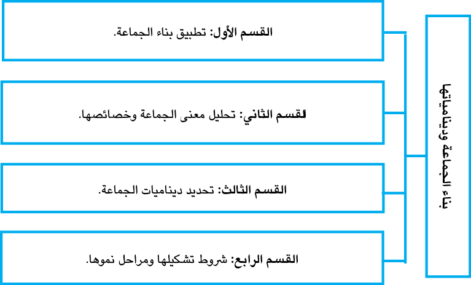

|
إنَ العملَ في إطار المجموعات له الكثير من الفوائد؛ فهو - من ناحية- يعالج بعض الأفكار المُسَبَّقة عن الأفراد، ويزيد الاتصال الإيجابي فيما بينهم، كذلك يساعد في رفع الشعور بالتقدير الذَّاتيّ الصِّحيّ لدى المشاركين - من ناحية أخرى- ومِنْ ثَمَّ، تحسين أدائهم الوظيفي، كما له تأثيرات متعدّدة في المستوى الاجتماعيّ والثّقافيّ والعاطفيّ، إذ إنّ المشاركين في المجموعات يأتون من خلفيات اجتماعيّة ودينيّة وثقافيّة مختلفة، وعلى الأغلب، ينتمون إلى مناطق جغرافية- سياسية مختلفة. تتمحور هذه الوحدة الحديث عن ديناميكية العمل في المجموعات - بشكل عام- مع توضيح خصوصية العمل والهدف من تكوين المجموعات وفلسفة العمل من وراء هذا التوجه. وسيتم تناول أيضاً ) الأدوار(الشخصيات التي يلعبها المشاركون داخل المجموعة، وكيفية التَّعامل معها، مع ذكرٍ لبعض استراتيجيات العمل التي يمكن للميسر/ ة الاستفادة منها في عمله في الإرشاد والتوجيه الجماعيّ والسُّلوك الاجتماعيَّ لأفراد الجماعة أثناء التفاعل الاجتماعي يختلف عن سلوكهم إذا كانوا فرادى، ويكمن وراء هذا ديناميات الجماعة. وتتميز الجماعة بأنّها « كلّ ديناميّ» ويعني هذا أن التفاعل الذي يؤدي إلى التغيّر في حالة أي ّجزء من أجزاء الجماعة، يؤدي إلى تغيّر في اي جزء اخر فمثلا تغير علاقات القوة في الاسرة اذا مات عضو فيها وا أنظمتها، كالزواج او الميلاد، فدينامية الجماعة هي التفاعل مضافا اليه عنصر التغير. ومن الواضح، أنه لا فرديْن ولا جماعتيْن متفاعلتين يكونان أبدا الشيء نفسه بعد حدوث التفاعل، وإنَّما يتغيَّران إلى حالة أكثر أو أقل صداقة، مثلا كنتيجة التفاعل ولولا التفاعل لا يمكن للتغير أن يحدث. ومن مظاهر دينامية الجماعة: التفاعل الاجتماعيّ، والتكامل الاجتماعيّ، والعلاقات الانسانيّة، والتغيُّر الاجتماعيّ، والعلاقات الانسانيّة، وغير ذلك من مظاهر السلوك الجماعيّ، ودينامية الجماعة، طاقة مسؤولة عن تكون الجماعة ونموها وتغيّرها. |
|
ويُعَدُّ تماسك الجماعة من أكبر التَّحديات التي تواجِهُ الجماعات صغيرةً كانتْ أو كبيرةً، فالتماسُك عاملٌ، وعنوان الفعل، والإنتاج، والتأثير في الواقع، إضافة إلى كونه يحقِّق استمرارية الجماعة، وتطورها، ويمكنها من الاستجابة الفاعلة للتحدِّيات؛ أمَّا في عدمه فتصبحُ الجماعة مُحاطةً بأسباب الفشل والعجز عن الفعل في الواقع، ومُهدِّدًا لاستمراريَّتها ووحدتها. |
 إنَّ كلَّ مرحلة عُمريَّة تلائمها نوعيّة محدَّدة منَ الجماعات التي يمكن أن ترتقيَ بمستويات استجابتها لحاجات الأفراد، وتتعدَّدُ مستويات تفاعل الأفراد وديناميات الارتباط بها تَبَعًا للعديد من المتغيِّرات المُتداخلة، منها ما هو ذاتيٌّ، ومنها ما هو موضوعيٌّ أو داخليٌّ وخارجي.
إنَّ كلَّ مرحلة عُمريَّة تلائمها نوعيّة محدَّدة منَ الجماعات التي يمكن أن ترتقيَ بمستويات استجابتها لحاجات الأفراد، وتتعدَّدُ مستويات تفاعل الأفراد وديناميات الارتباط بها تَبَعًا للعديد من المتغيِّرات المُتداخلة، منها ما هو ذاتيٌّ، ومنها ما هو موضوعيٌّ أو داخليٌّ وخارجي.2.1 الهدف العام للوحدة الدِّراسيَّة
- عزيزيَ الطالبَ- يُتوقَّعُ منك بعد دراستك للوحدة الدِّراسيَّة، أنْ تتمكَّنَ من:
تطبيق بناء الجماعة.
تحليل معنى الجماعة وخصائصها.
تحديد ديناميات الجماعة، وشروط تشكيلها، ومراحل نموِّها.
عزيزيَ الطالبَ: وِفْقًا للهدف العام للوحدة، وبعد دراستك لها، يُتوقَّع منك تحقيق النواتج التعليمة الآتية:
أن تكون قادرا على تحديد ديناميات الجماعة وبنائها.
أن تكون قادرا على فهمَ معنى الجماعة وتحليلها، ومعرفة خصائصها.
أن تمتلكَ المهاراتِ والقُدراتِ التي تمكِّنُكَ من بناءِ الجماعة في الإرشاد الجمعيّ.
4.1 الموارد والقراءات المساندة
|
- عزيزيَ الطالبَ- أثناء دراستك لهذه الوحدة، قد تَجِدُ أنك بحاجة إلى مزيدٍ منَ التَّوضيحات والمعلومات حول ما جاءَ فيها من أفكار ومفاهيم، فيمكنكَ الرُّجوع إلى الموارد والمراجع التالية: |
|
1- مصادر إلكترونية: ●صفحة المقرر الكتروني: الخطة والعروض التقديمية والوسائط المتعددة. ●الصفوف الافتراضية. 2- مصادر ورقية: ●مكتبه الشهيد خالد الحسن lAl Istiqlal Library ●هشام إبراهيم عبد الله .(2014 ). الإرشاد النفسي الجماعي... مكتبة النور، الخوارزمات العلمية للنشر والتوزيع. |
تتناول الوحدة الثانية موضوعاتٍ ومفاهيمَ أساسيّةً في بناء الجماعة ودينامياتها.... وذلك من خلال تناول الموضوعات المرتبطة بأهداف الوحدة ودراستها، والتي يوضّحها الشكل الآتي:

|
هل فكرت يوما كيف تُسهِمُ دراسة دينامية الجماعة في فهم العوامل المؤثرة بها؟ يمكن استخدام الديناميات للتأثير في الجماعة؛ ولتحقيق ألأهداف المطلوبة من خلال التفاعل الديناميّ في الجماعة، ويمكن اكتشاف قدرات وإمكانات أعضائها، كما تتم عمليات اكتساب أو تعديل خصائصهم المجتمعيَّة من خلالها . |
|

|
|
تفيد دراسة ديناميات الجماعة في: فهم سلوكيَّات صُناع القرار تَتَبُّع انتشار الأمراض في المجتمع. خلق تقنيات علاج فعالة. تعقب ظهور أفكار وتكنولوجيا جديدة. فهم العنصريّة، والتمييز على أساس الجنس واللون |
|
تأمل هذه العبارة!! تمثل دينامية الجماعة القوى النفسية والجماعية المتعددة والمتحركة والفاعلة لأعضاء الجماعة”. |
|
لكلِّ مرحلة عُمريّة نوعية تلائمها من الجماعات، التي يمكن أن ترتقي بمستويات استجابتها، لحاجات الأفراد، وفق كل مرحلة عُمريّة، وتتعدَّدُ مستويات تفاعل الأفراد، وديناميات الارتباط بها تَبْعَا للعديد منَ المتغيِّرات المًتداخلة، منها ما هو ذاتيٌّ، ومنها ما هو موضوعيٌّ أو داخليّ وخارجيّ. |
|

|
رابط فيديو يوضح دينامية الجماعة. |
|

يتألّف مصطلح «دينامية الجماعة» من كلمتيْن:
الدينامية: يقصد بها القوى الداخلية التي تتحكم في سلوك الفرد ومشاعره وأفكاره سواء كان واعيا بها أم غير واعي.
الجماعة: هي وحدة اجتماعية مكونةٌ من اثنين أو أكثر من الأفراد، الذين لديهم قواسم مشتركة منَ المُعتقدات والقيم، ويتَّبعون القواعدَ نفسَها، ويعملون من أجل أهداف ومَهامٍّ مشتركة مُتَّفقٍ عليها.
تنطوي على المجموعات سمات اجتماعيَّة كثيرةَ منها التَّنوُّع في الحَجْمِ والبناء.
والجماعة ليست مجرد تجمع أفراد في مكان واحد بل هي علاقة تبادلية تفاعلية بينهم فيها تأثير وتأثر وتعاون وصراع قواعد وأدوار تحكم السلوكيات
إنَّ الجماعاتَ ليست موادَّ مُجمَّدةً؛ فهي تُولَدُ وتتطوَّرُ، تَتَسانَدُ وتَتَباعَدُ، وباختصارٍ، فإنَّ لها تاريخاً.
قد قدّم علماء النفس وغيرهم تعريفات عديدة للجماعة ، يمكنُ إجمالُها بالمحاور الآتية:
تعرَّيف جورج هومانز للجماعة : على أنَّها مجموعة أشخاص يتواصلون معاً لمدّة منَ الزمن، وتمكِّنُهم قلَّة عددهم من أنْ يتواصلوا معاً وجهاً لوجهٍ، وليس عبْرَ أُناس آخرين.
ويعرِّفها الكاتبان كاست وروز نويج بأنَّها مجموعةٌ أو تجمُّعُ لأشخاصٍ تربطُهم معاً بطريقة أو بأخرى روابطَ أو مصالحَ مشتركةً، قد تتمثَّل في طبقةٍ اجتماعيَّة أو جنسٍ أو مِهَنٍ أو ما إلى ذلك.
وعرَّفها فورسيث 1993أنَّها علاقةُ شخصيْن أو أكثر يؤثرون بعضَهم بعضًا من خلال التَّفاعُل الاجتماعيّ.
وعرَّفها زهران 1984 بأنَّها وحدةٌ اجتماعيَّةٌ تتكوَّنُ مِنْ مجموعةٍ منَ الأفراد ( من اثنين فأكثر) بينهما تفاعُلٌ اجتماعيٌّ متبادلٌ، وتتميَّزُ الجماعةُ الإنسانيَّةُ بوجودِ الُّلغة، وهي أداةُ اتِّصالٍ رئيسةٍ، وعلاقةٌ صريحةٌ، وقد تكونُ اقتصاديّة، وجادَّة، ولها أهدافٌ مشتركةٌ ... ويتحدَّدُ فيها أدوارُ الأفرادِ الاجتماعيّة، ومكانتُهم، ولهذه الوحدة الاجتماعيَّة مجموعةٌ منَ المعاييرِ والقيمِ الخاصَّة بها.
والواقع، أنَّه - بعد دراسة هذه التَّعريفاتِ ، فإنَّه يمكن القول: إنَّ الجماعةَ تتميَّزُ بالخصائصِ الآتية:
1. وجود مصالح أو أهداف مشتركة: إنَّ وجود هدفٍ واحدٍ على الأقلِّ أمرٌ ضروريٌّ؛ لتكوين الجماعات الصغيرة في المُنظَّمات والمجتمعات.
2. الانسجام والتَّفاهم بين أعضاء الجماعة: إن وجودَ الانسجامِ والتَّفاهم بين أعضاء الجماعة أمرٌ ضروريٌّ؛ لتحقيق الأهداف التي تسعى إليها المجموعة.
3. التّفاعل: إنَّ التَّفاهم بين أعضاء المجموعة يَنْبِثِقُ عنِ التَّفاعل بينهم، وهذا التَّفاعلُ الذي يتمثَّلُ في أنشطة ومشاعر وأفكار ومفاهيم يقومون بها ويتعاملون معها.
4. وجود هيكلٍ للمجموعة: ينشأ بين أعضاء المجموعة هيكلٌ يتمثَّلُ في العلاقات التي تقوم بين القادة والتابعين، وفي نظامٍ مُتدرِّجٍ منَ المراكز الاجتماعيّة في المجموعة.
5. وجود معايير وقيم: نظراً لوجود أهدافٍ ومصالحَ مشتركةٍ بين أعضاء المجموعة، تتطوَّرُ بينهم أنماطٌ سلوكيّةٌ ومعاييرُ يتوقَّعُ من أولئك الأعضاء مراعاتها والمحافظة عليها.
6. القرب الجغرافيّ: لا بدَّ للمجموعة من أن توجدَ في مكانٍ جغرافيٍّ واحدٍ؛ لِيَسْهُلَ اتَّصالهم وتفاعلهم معاً.
7. الديناميكيَّة: تتميَّز الجماعة بأنَّها كلٌّ ديناميكيٌّ، والتَّغيَّر الذي يصيب أيَّ جزءٍ منَ الجماعة، يؤدِّي إلى تغيُّرٍ في أيِّ جزءٍ آخرَ.
العوامل التي تزيد من فعَّالةً الجماعة :
1. إذا عرفتَ لماذا هي موجودة، ومعرفة سبب التكوين.
2. إذا خلقْتَ جوًّا مناسبًا يمكنُ القيامُ بالعمل من خلاله.
3. إن استطاعت تطويرَ منهجٍ معيّنٍ يساعدُ على اتِّخاذ القرار، أيْ، تطويرَ خطوطِ مواجهةٍ ومرشدةٍ؛ لاتخاذ القرار.
4. إن تمكنت من تكوينَ أوضاع ومواقفَ، إذ إنَّ كلَّ عضوٍ يستطيعُ أنْ يُسهمَ بطريقته، وبأسلوبه الفريد.
5. إن حققت َ الاتِّصال بين الأعضاء.
6. إن تعلم الأعضاء أنْ يقدِّموا أو يتلقُّوا المساعدة ( مبدأ الأخذِ والعطاء).
7. إن تعلم ُ الأعضاء التَّعامُل معَ الصِّراع.
8. إن تعلَّمُ الأعضاءُ تشخيصَ سلوكيَّاتهم، وتطوير وظائفها.
3.2 ديناميات الجماعة Group dynamic :
إنّ لكلِّ جماعة قوى تتدخل، وتحاول من خلالها المجموعة تحقيق أهدافها، وموضوع ديناميات الجماعة يهتمُّ بدراسة تلك القوى، التي تُسهمُ في تحسين فعاليّة الجماعة، ومن غير الكافي أنْ يفهم القائد وحدَه تلك القوى الموجودة في الجماعة، بل يجبُ عليه مساعدة أفراد الجماعة في فهم تلك القوى، وأنْ يكونَ قادرًا على مساعدة الأعضاء في تحديد موارد الجماعة، واستخدامها؛ لتساعدهم في تحقيق أهدافهم، وأنْ يدركوا السّلوك الذي يُوحي بالصعوبة، وأنْ يشخّصوا الصُّعوبات وأنْ يقدِّموا المساعدات لكلِّ فرد لحلِّ المشكلات في المجموعة، لذا، كان لا بُدّ من دراسة هذه الديناميات، ومعرفة كيفية تأثيرها في أعضاء الجماعة.
يعرف بونر(H.Bonner) ديناميات الجماعة بأنَّها ذلك الفرع من علم النَّفس الاجتماعيّ، الذي يبحث في تكوُّن الجماعة وبنائها ووظائفها، بحيث تصبح ذاتية التَّوجيه، ولا تتكوَّنُ الجماعة في نظره بصورة آلية، ولكن نتيجة لجهود أعضائها في حلِّ مشكلاتهم وفي إشباع حاجاتهم.
ويعرّف كارترايت و زاندر علم ديناميات الجماعة بأنّه فرع من فروع المعرفة متخصُّص في العلوم الاجتماعية يتَّصل بالسلوك الإنسانيّ، والعلاقات الإنسانيّة، وفي نظرهما أنَّه يصعبُ تحديدُ ميدان ديناميات الجماعةِ تحديدًا يجعله فرعًا أو جزءًا من أيِّ علمٍ منَ العلوم الاجتماعيَّة المعروفة، والواقع، أنَّه يمكن حصرُ ثلاثةِ مجالاتٍ كانَ قد نظرَ، من خلالها، الباحثون في تعريف ديناميات الجماعة، وذلك على النحوّ الآتي:
فقد نظر إليها فريقٌ على أنّها علمٌ يَصِفُ كيفيّة تنظيم الجماعة، وإدارتها، وهذا الفريق معياري في نظرته؛ إذ يتحدَّث عمَّا يجبُ أنْ يكونَ، ومِنْ ثّمَّ، يُركِّزُ على القيادة الدِّيمقراطيّة.
وتناوَلها فريقٌ آخر من حيثُ: إنَّها تتكوَّن من عددٍ منَ الأساليب والطُّرق، ومن ثَمَّ يُركِّزُ على أساليب وطرق مثل: تمثيل الأدوار، وجلسات الوصف الفكريّ، والجماعات التي لا قيادةَ لها، والتَّدريب على الحساسية والمعالجة بوساطة المجموعات.
أمَّا الفريقُ الثالثُ فإنّه يعالج ديناميات الجماعة من حيثُ طبيعةُ الجماعة، وعواملُ تكوينها، وتركيبها وعمليّاتها ونواحي تأثيرها في الفرد والمجموعات الأخرى والتنظيمات، وفي نظر هذا الفريق، أنَّه يجب أن نفرِّقَ بين ديناميات الجماعة كحقل من حقولِ الدِّراسة، وبيَّن كونها قوًى وحقائقَ وعواملَ تتَّصلُ بماهيَّة الجماعة، ووجودها الواقعيّ.
فديناميات الجماعة هي مجموعة القوى المتفاعلة معًا داخلَ المجموعة، التي تنظِّمُ وترتِّبُ وتديرُ عمَلَ المجموعة؛ من أجل مساعدة المجموعة على تحقيق أهدافها، والوصول لمبتغاها.
تدريب ( 1 )

|
لخَّصْ تعريفَ علم دينامية الجماعة |
4.2 مفاتيح فهم ديناميات الجماعة:
1. الأهداف: تشترك جميع المجموعات في ميزة مشتركة، وهي وجود هدف مشترك أو مجموعة أهداف، وبغض النظر عن الطبيعة المحدّدة للهدف، فإنَّه أكثر احتمالًا لأنْ يتحققَّ إذا ما نَتجَ عن الاجتماع المتبادل بين أعضاء الجماعة.
2. البناء والتركيب: كلّ المجموعاتِ لها بناءٌ وتركيبٌ ولا يمكنُ أنْ تبقى المجموعة دونَ بناءٍ، ؛ ذلك لأنها تُطوِّرُ طرقًا وإجراءاتٍ وقواعدَ مميَّزةً، وطرقَ للتَّفاعلِ، وطقوسا وتقاليدَ وأدوارًا وأنظمةَ اتصال، ويمكن استنتاج التركيب منَ الأنماط والعلاقات، ومنَ الجدير بالذكر، أنَّ القادة يشاركونَ في تطوير بناء المجموعة، وخاصَّة في المراحل الأولى من حياة الجماعة.
3. المعايير: هي مجموعه المقاييس أو القواعد أو الشروط التي يتم الاعتماد عليها للحكم على أعضاء الجماعة حيث تزود الأعضاء بمقاييس السلوك المقبول ويمكن اعتبارها الأسس التي يعتمد عليها المرشد عند اختيار أعضاء المجموعة لضمان نجاح الأهداف.
4. الأدوار: هي المهام أو المسؤوليات التي يتوقع من الفرد القيام بها داخل الجماعة وكيف يسلك في موقف معين وفقا لموقعه أو وظيفته أومكانتة في تلك الجماعة
5.2 مشكلات في ديناميات الجماعة:
على الرغم من وجود خلافٍ لدى علماء النفس والاجتماع فيما يختص بالوجود الفعليّ للجماعات، فإنَّ هذا لا يمثِّلُ مشكلة بالنسبة لدارس ديناميات الجماعة، فالشخص المهتم بالدراسة العلمية للجماعات لا يُداخُله شكٌّ في وجودها، وقد تبيَّن أنَّ هناك عدداً منَ المشكلات التي يختلف بشأنها المتخصصون في ديناميات الجماعة، ولا يثيرُ هذا الدهشةَ ما دامت ديناميات الجماعة هي مجالًا من البحوث الحديثة نسبيّاً.
فقد حدَّدَ الباحثانِ كارت رايت وزاندر المشكلاتِ الأساسيَّةَ المرتبطةَ بالدّراسة العلميّة في المجالات الآتية:
التَّصورات المُسَبَّقَة عن طبيعة الجماعات.
المشكلات المرتبطة بتحديد مجال الدراسة.
مشكلات التوجُّهِ النَّظريّ الملائم.
مشكلة المنهج أو المناهج الملائمة لدراسة الجماعات.
علاقة ديناميات الجماعة بالمجتمع الأكبر.
التقويم الذاتي ( 1 )
|
كيف تفسِّر دور المعايير في تحديد قواعد السلوك للمجموعة؟ |
6.2 شروط تشكيل الجماعة الإرشاديَّة:
ذكرُ أنّ كاميليا عبد الفتاح ( 1998) وآخرينَ كانوا قد وضعوا شروطًا معينة لتشكيل الجماعة الإرشادية، ينبغي مراعاتها عند تكوينها، ويمكن حصرها بالشروط الآتية:
1.6.2 أولا: اختيار الأعضاء للجماعة:
أكدَّ كلٌّ من جازدا وسلاسفون أنَّ المهارة في تشكيل المجموعات أهمُّ عنصرٍ في المجموعة، وتأتي شخصية المُرشد في المقام الثاني من حيثُ الأهمِّيَّة، كما يؤثّر العمر تأثيرًا مهمًّا في تشكيل المجموعات، ولا سيما فيما يتعلق بالمرشد، وعلى المرشد مراعاة اختيار مسترشديه من العمر نفسه تقريبا، ولكنَّ الأكثر أهمِّيَّة هو النُّضجُ الاجتماعيُّ للمُسترشِد، كما يؤثِّرُ في اختيار الأعضاء تأثيرًا مهمًّا الجنس، وكذلك تؤثر خصائص الأفراد في تشكيل الجماعة من ناحيتيْن اثنتيْن هما:
الأولى: إنَّ خصائصَ كلِّ عضوٍ في الجماعة تُحدِّدُ إلى درجةٍ معيّنةٍ، ماذا سيكون عليه سلوكُهُ في الجماعة، والكيفية التي سوف يستجيبُ الآخرون له.
والثانية: هي الطَّريقة التي تؤثِّر بها الخصائص الفرديّة في سلوك الجماعة .
ويتأثر الإنسانٍ بأنواع السُّلوك التي يقوم بها الفرد الواحد في المواقف المختلفة، فالرئيس العدواني تلقَّى مطالبَ زوجته بكلمة وديعة، وهي (حاضر يا عزيزتي) والشاب الَّلبِقُ الذَّكيُّ بصحبة شبابٍ آخرين، يصبح مرتبكا وغيرَ كفءٍ في الجماعات الاجتماعية المختلطة بالجنس، والفتاة التي تصدر أحكاما بثقةٍ وبقدَرٍ كبيرٍ منَ الدقةِ، حينما تكون منفردة، تُخطِئُ – غالبا - حينما تُواجَهُ بأحكامٍ اجتماعيّة خاطئة من زملائها أعضاء الجماعة، ومنَ الضَّروريِّ أنْ نلاحظَ من
خلال الفحص المُدقَّقِ أنَّ هذه التباينات مرتبطةٌ بالعضويّة النوعيّة في الجماعة - أنَّ سلوكَ الشَّخص ما هو إلا دلالة على علاقته تجاه الآخرين في الجماعة.
وحيث يتجمع أفراد متعددون لأول مرة، ويبدأون في التفاعل، فإنَّ الفروق الفرديّة تبدأ في الظهور، فنجد بعضَ الأفراد أكثر ظهورا من غيرهم، وقد يمارسُ بعضُهم تأثيرًا كبيرًا على قرارات الجماعة، ويكون بعضهم أكثرَ نشاطًا من الآخرين.
وَوِفْقًا لکارترايت وراندر فإنَّ العوامل التي تُحدِّدُ بِنْيَةَ الجماعةِ، يمكِنُ تصنيفها إلى ثلاث فئات، هي:
●متطلبات الأداء الكفء للجماعة.
●القدرات والدوافع لدى أعضاء الجماعة.
●والبيئة الفيزيقية الاجتماعية للجماعة.
ينبغي أنْ يكونَ عدد أفراد الجماعة الإرشادية معقولا؛ فلا يقلُّ عن ثلاثة، ولا يزيد عن خمسة عشر، حتى لا تمثل عبئا ثقيلا على كاهل المرشد، وحتى تستفيد الجماعة من فوائد الارشاد الجمعيّ. بالإضافة إلى قائد أو قائدين من الاختصائين النفسيين، وتلتقي المجموعة الإرشادية أسبوعيًّا، ولمدَّة ساعة ونصف في الجلسة الواحدة، أو وِفْق ما يتم الاتّفاق عليه.
والمجموعات الإرشادية قد تكون صغيرة أو كبيرة وتمتاز المجموعات صغيرة العدد بان ينخرط فيها العضو انخراطًا أعمق، وقد تكون بين 4- 8 أعضاء. كما تساعد الأعضاء على أنْ يتفاعلوا معا، ويواجهوا بعضهم.
أما المجموعات كبيرة العدد فتمتاز بما يلي:
1. توفر لأعضائها فرصة للتفاعل مع أشخاص كُثُرٍ لهم الاهتمامات نفسُها.
2. تنظيم المشكلات قد يصبح أصعب.
3. تزايد الأعضاء يؤدي لزيادة الاتصال مع الأعلى أي مع القائد.
4. قد تقل عدد النشاطات، وقد يقل انتباه القائد على كل الأعضاء، ولا يستطيع القائد تلبية حاجات جميع أعضائه الانفعاليّة.
5. يصبح هناك فرصة؛ لأنْ ينقسموا إلى جماعات صغيرة.
6. يصبح المُرشد أكثر استعدادًا؛ لأنْ يكون استبداديًّا، وقد تُحدثُ صعوبات في التَّواصل.
أنَّ عددَ أشخاصِ الجماعة له نتائج عديدة ومهمة بالنسبة لعمليّة الجماعة، ويتزايد نطاق القدرات، وطبيعة المعارف والمهارات المتاحة للجماعة بزيادة حجم الجماعة، كذلك فإنّ العدد الأكبر يتيح فرصة أكبر لمقابلة الآخرين من ذوي الإثارة والجاذبية، الذين يُمْكِنُ أنْ يكونَ التفاعل معهم مُثيبًا، وبالنسبة للأشخاص الخَجولين فإنَّ الجماعة ذاتَ الحجم الكبير تعطيهم الإحساسَ بأنَّهم مجرَّد لافتين للأنظار، ولذلك، فقد تكون تلك الجماعة أكثر جاذبية لهم. ومن ناحية أخرى، فإنَّه كلَّما زاد حجم الجماعة فإنَّ المشكلات المتعلقة بالتنظيم تزداد صعوبة، ومع زيادة الحجم، تميل الجماعات الفرعية لأنْ تتشكّلَ في جماعات أكبر، ومن ثَمَّ، يتزايد احتمال الصِّراع، وكلما زاد الحجم فإنَّ عددا أقل نسبيًّا من أعضاء الجماعة يشارك في أنشطتها، ويكون الأعضاء أكثر ميلا لمجاراة الضغوط المعيارية للجماعة.
وفيما يتعلِّقُ بمشاركة العضو في الجماعة فإنَّه كلما تزايد حجم الجماعة، فإن حجـم الوقت المتاح لكلِّ عضو للمشاركة في أنشطة الجماعة يتناقص، وكنتيجة لذلك، فإنَّ هناك تناقصاً في القَدَرِ الكليِّ من المشاركة.
3.6.2 ثالثا : الحجمَ المناسب للمجموعة يعتمدُ على عوامل عدّة منها:
عمرُ المُسترشدين، نمط المجموعة، خبرة مرشد المجموعة، كون المجموعة لها قائد واحد أو أكثر، فبالنسبة لمجموعة الأطفال الصِّغار فإنَّ الحجمَ المناسب هو 3-4 أطفال، ونأخذ – بعين الاعتبار - عاملَ قدرةِ المُرشِدِ على ضبط الأطفال الصغار، أمَّا بالنسبة للأطفال في المرحلة العمرية 9 - 12 سنة، فعلى المرشد أنْ يُحدِّدَ أفراد المجموعة في هذا العمر؛ حتى يتمكّنَ من ضبط العمليات العلاجية في المجموعة،.
يُعَدُّ الإرشاد الجَمْعيّ ذا فائدة لكلِّ الأطفال في عمر المدرسة الابتدائية والمُراهقين، ولكنْ عند تكوين الجماعة الإرشادية يُفضل أنْ يكونَ هناك تقاربٌ في عُمُر الأعضاء، وذلك لاختلاف طبيعة كلِّ مرحلة عُمُريَّة وحاجاتها وخصائصها، والمشكلات التي تميِّزُها عن المرحلة العُمُريَّة الأُخرى.
إنَّ التَّجانسَ أو عدم التجانس في جنس المجموعة الإرشاديَّة يتوقَّفُ على العُمر الزَّمني للأعضاء، ففي مرحلة الطفولة يُمْكِنُ أنْ يشتركَ البنونَ والبنات معًا في المجموعة الإرشاديّة، أمَّا في مرحلة الطفولة المتأخرة، ومع بداية مرحلة المُراهقة يفضَلُ الفصل بين الجنسيْن عند تكوين الجماعة الإرشاديّة، وذلك لاختلاف طبيعة كلِّ جنسٍ واهتماماته، هذا إلى جانبِ أنَّ هناك موضوعاتٍ عند إثارتها، قد تسبِّبُ الشعور بالخجل أمامَ الجنس الآخر، وخاصَّةً في مرحلة المراهقة، ممَّا قد يكون له تأثيرٌ سلبيٌّ على العملية الإرشاديّة.
لا شكَّ أنَّ وجود طالب بين مجموعةٍ إرشاديَّةٍ معظم أفرادها أعلى منه في مستوى الذكاء، لسوف تؤثر فيه سلبًا، أمَّا إذا كان المستوى العقليّ، لأحد الطلبة، أعلى من معظم أفراد المجموعة الإرشادية فقد يؤدي ذلك إلى نبذِهِ من باقي زملائه في المجموعة، لذلك، يفضل أن يتمَّ التَّجانُس في الذكاء إلى حدٍّ ما بين أفراد المجموعة الإرشادية.
إنَّ وجود مشكلات مشتركة بين أفراد المجموعة الإرشاديّة الواحدة يساعد الطالب على إشباع حاجته إلى الشعور بالانتماء والإحساس بأنّ الآخرينَ يفهمونه، وهذا دون شكٍّ يطمئنه إلى أنَّه لا يختلف عن الآخرين، إذ قد يؤدِّي الاختلاف، والتَّنوُّع الكبيرُ، في نوع المشكلات إلى صعوبات تتعلِّقُ بعمليَّات التَّفاهم والانسجام فيما بين أفراد المجموعة، ويتمُّ تشكيل المجموعة الإرشاديّة على أساس موضوعٍ ما، كمجموعة الطلبة الذين يعانونَ قلقًا منَ الامتحان ( أو يتمُّ تشكيل المجموعة على أساس جماعات إرشادية عامة، وتناقش هذه المجموعات موضوعات متعددة يطرحها أعضاء كل مجموعة ) مثل الصعوبات في تكوين صداقات مع الآخرين أو الصعوبات الأكاديمية.
يمكن أن يكونَ ساعة إلى ساعتين لمدة 12 جلسة، ووفقا لأهداف المجموعة وقد يخًصَص عدد من الجلسات يزيد أو يقل عن ذلك. إنَّ عدد اللقاءات خلال الأسبوع الواحد يمكن أن يعتمدَ على عواملَ عدّةٍ منها:
نمط المجموعة، خبرة القائد، وبشكلٍ عامٍ فإنّ اللقاء بمعدل مرّة واحدة أسبوعيًّا، يبدو مناسبا لمعظم المجموعات الإرشادية، وبالنسبة للأطفال والمراهقين، فإنَّه، من الأفضل، اللقاء عدة مرات وبجلسات مدّتها أقصر، وقد تلتقي المجموعة - أحيانا - لقاءً يوميًّا إذا تطلبت أهدافُ البرنامج هذا التَّرتيب، ومن جهةٍ ثانية، فإنَّ المدة الفاصلة الطويلة بين جلسة وأخرى كأن تكون مدّتها شهرا فقد تؤدي الفترة الطويلة إلى نسيان الأعضاء لمَا جرى في الجلسة السّابقة؛ ممَّا يجعلُ الاتصال بين الجلسات مَهَمَّةً صعبة.
تجدرُ الإشارة إلى ضرورة تجنُّبِ جمعِ الأصدقاء والأقارب والمعارف من الطلبة في المجموعة الإرشادية؛ إذ قد يتعذَّرُ مناقشة المشكلة بحريّة تامة، وكذلك، فإنَّ الثقةَ المتبادلة والاحتفاظ بما يدور بين أعضاء المجموعة بسريّة تامّة، ويمنعُ الحديث عنة خارج المجموعة.
9.6.2 تاسعا: مكان التقاء المجموعة الإرشاديّة:
تلتقي المجموعة في مكان يتوفر فيه الهدوءُ والرَّاحة والأمان، ويكون شكلُ الجلسة دائريًّا؛ من أَجْلَ التواصُلِ اللفظيّ وغير اللفظيّ، وإمكانية النقاش والحوار، ويفضَّلُ أنْ تكونَ غرفةً عازلةً للصوتِ، واسعةَ اتساعًا كافيًا، وتُرتَّبُ الجلسة بحيث يتمكّن كلُّ شخصٍ من رؤية كلِّ الأشخاص الآخرين، ويجبُ أنْ تكونَ الغرفة مؤثثة تأثيثًا جيّدًا ومناسبًا ومريحًا، وفي المراحل الأوليّة من حياة المجموعة تشكِّلُ الطاولةُ نوعًا من الأمن والحماية للأعضاء، وتوفِّرُ لهم نوعًا من الرَّاحة النَّفسيَّة وفي بعض الأحيان، يشعر الأفراد بعدم الراحة دونَ وجودِ طاولةٍ، ويفضَّلُ في الجلسات اللاحقة، وعندما تقتربُ المجموعة من مرحلة التَّماسُك إبعاد الطاولة عن الأعضاء.
10.6.2 عاشرا: نهاء المجموعة الإرشاديَّة:
يُحدِّدُ المُرشدُ - غالبا - وقتًا متوقَّعًا لإنجاز الأهداف المطلوبة وعندما تتحقِّق جميع الأهداف يُنهي المرشد المجموعة مع أهمية متابعته لأفراد المجموعة وقد يحوِّلُ بعضَهم إلى الإرشاد الفرديّ، أو إلى مجموعة أُخرى.
تدريب ( 2 )
|
اُذكر/ي شروط تشكيل الجماعة الإرشادية |
7.2 الأدوار في المجموعة الإرشاديَّة:
يقومُ المُرشدُ بمجموعةٍ من الأدوار ضمن المجموعة مثل: التَّنسيق والإصغاء والتَّعاطف والتَّقبُّل والتَّفسير والتَّعليق والتَّلخيص، بينما يقومُ المُسترشِد بأدوارٍ مثل: المشاركة الفعَّالة والاتِّصال المفتوح والالتزام والمتابعة وأداء الواجبات.
8.2 المجموعة المفتوحة مقابل المجموعة المغلقة:
عند اختيار المجموعة الإرشادية يجِبُ أنْ نقرِّرَ مسبقا ومن الجلسات الأولى، وبالاتفاق مع الأعضاء المشاركينَ ما إذا ستكون المجموعة مفتوحةً أو مُغْلقة، إذ إنَّ المجموعة المغلقة لا يُسْمَحُ بانضمام أعضاءٍ جُدُدٍ إليها إلا الأفرادَ المُقرَّرَ حضورهم مسبقا ، وتبقى كذلك، حتى تُقرِّرَ المجموعةُ الانتهاء، أمَّا المجموعةُ المفتوحة فإنَّه يستطيع أعضاءٌ جُدُدٌ أن يحلِّوا مَحِلَّ الأعضاءِ المُنسحبين، وتُزَوَّدُ بمثيراتٍ جديدةٍ تزويدًا مستمرًا، وهناك ميزةٌ أُخرى لها، وهي أنَّ الأعضاءَ يواجهونَ باستمرارٍ وجودَ أعضاءِ جُدُدٍ يستطيعونَ أنْ يتبادلوا معهم المواقف والتَّصرُّفات مؤثِّرين فيهم، أو متأثِّرين بهم، وإنَّ الأعضاءَ الجُدُدَ سيجدونَ أمامَهم أعضاءَ المجموعة، يمثِّلونَ أُنموذجًا يتعلَّمون منهم كلَّ ما يتعلَّق بالمجموعة، إنَّ التَّغيُّر في الأعضاءِ قد يؤثِّر في تماسُك الجماعة، وإذا قام القائد بالموافقة على انضمام عضوٍ جديدٍ، فإنَّه بحاجة إلى تكريس الوقت والانتباه؛ لتحضير الأعضاء الجُدُدِ الأعضاءِ، قد يجدونَ صعوبةً في اعتبار أنفسهم جزءًا من المجموعة؛ لأنَّهم غيرُ مُطَّلعين، وينبغي مساعدتهم حتى يكونوا مندمجين في المجموعة.
أمّا بالنسبة للمجموعة المغلقة فلها تعداد ثابت، ووقت محدد للعمل، وتُعْرَضُ مشاكلُ معيَّنةٌ في ضوئها يُقرِّرُ الأفرادُ ما إذا كانوا سيستمرون أو ينسحبون من المجموعة.
نشاط ( 1 )

|
حاول أنْ تشكِّلَ مع زملائك في الشُّعَبِ مجموعةً وِفْقَ الشُّروط الموجودة أعلاه، وسجِّل الصُّعوبات والمُعيقات لتشكيل المجموعة. |
9.2 مراحل نموِّ الجماعة الإرشاديَّة:
للجماعة أهمِّيَّةٌ كبيرةٌ في حياةِ الأفراد، وفي المجتمعات الكبيرة التي ينتمون إليها.
والجماعة قد تكونُ فرديْن أو أكثر يتفاعلون مع بعضهم بعضًا تفاعُلاً بنَّاءً، بحيث يؤثِّرُ كلٌّ منهم في الآخر، ويتأثَّر به؛ تحقيقاً لأهدافٍ خاصَّة بكلٍّ منهم، وأهدافٍ مشتركةٍ بينهم، ويسودُ الجماعةُ روابطَ وجدانيّةً متعدِّدةً، وأُخرى مستمدَّة منَ السُّلطة والقوة، وثالثةً مستمدَّةً من وجودِ هدفٍ مشتركٍ بين أعضائها، ثم روابط اتَّصاليّة.
ونموُّ الجماعات ظاهرةٌ حتميَّةٌ ضرورية لحياة الجماعة وارتقاؤها ، ونضج أعضائها بوصفها وحدةً، وتحقيقها لأهدافها، ودراسة نموِّ الجماعات ذاتُ أهمِّيَّة كبيرة في مساعدة المتخصِّصين والمسؤولين للتدخُّل - في الوقت وبالطريقة المناسبة - في حياة الجماعة، حتى يمكنَّهم توجيهها توجيهاً سليماً، ويساعدُ الوقوف على نموِّ الجماعات ومراحلها، القائمين على أمرها في التنبُّؤ بما سيكون عليه سلوك أعضائها في المراحل المختلفة؛ فمدرِّبُ فريقِ كرةِ القدم - مثلاً - يستطيعُ أنَ يتنبَّأ بأنَّ الفريقَ عندَ مرحلةٍ معيَّنةٍ سيسودُهُ جوٌّ من الصِّراع والتَّنافُسِ الحادّ بين الأعضاء، يعقبه وضعُ معاييرَ مناسبة للتعاون بينهم، تمهيداً لوحدة الفريق، وسعيه نحو تحقيق ذاته.
تعريف نمو الجماعة: يعرَّفُ النَّمو عامَّة بأنَّه التَّقدُّم نحو شكلٍ وتركيبٍ أكثرَ تعقيداً واكتمالا، أو أنَّه سلسلة منَ التغيرات الارتقائيَّة التَّراكُمية المُطَّردة والهادفة، ولا يحدث النَّمو فجأة أو بصورة عشوائيَّة، وللنِّمو مَظهران: تكوينيّ ووظيفيّ، ويسير نموُّ كلٍّ منهما في خطواتٍ متلاحقةٍ متتابعةٍ، وتعتمدُ كلُّ خطوة على الخطوة السابقة ، وتُمهِّدُ الطريق إلى الخطوة التالية لها. وعلى الرغم من استمرار النمو، وتداخل خطواته، إلا أنه يُقْسَمُ، عادة، إلى مراحل، مثلَ تقسيمِ السَّنة إلى فصولٍ، رغم تداخُلها.
منَ التَّعريف العامِّ السَّابقِ للنمو، يمكنُ تحديدُ مواصفاتِ نموِّ الجماعات فيما يأتي:
هو سلسلة من التغيرات تمرُّ بها الجماعة أثناءَ فترة حياتها، وتكون هذه التَّغيُّراتُ في شكل حلقاتٍ لكلٍّ منها خصائصُها ومميزاتُها، التي تميِّزُها عن غيرها، وتمهِّدُ كلُّ حلقةٍ منها للحلقة اللاحقة بها، وتتأثَّرُ بالسَّابقة، وتكون هذه التَّغيُّراتُ في خصائصِ التَّفاعلِ داخلَ الجماعة، وفي دورِ قائدها وأعضائها، وفي الروابط السَّائدة بينهم، ومِنْ ثَمَّ، في إنتاجيَّتها، وتسعى هذه التَّغيُّرات - عادة - إلى تحقيق أقصى درجاتِ نضجِ الجماعة.
تكون هذه التَّغيُّراتُ - في ضَوْءِ الخصائص المميِّزة للجماعة- كجماعة، وليستْ تغيُّراتٍ في الخصائص المميزة للأعضاء، كأفراد مُستقلِّين بعضهم عن بعض. فمثلاً، تنتقل الجماعة في نموِّها منَ التَّفاعُل العشوائيّ إلى تفاعُل متمركِزٍ حوْل القائد، إلى تفاعُل متمركِّزٍ حوْل العمل أو المَهَمَّة.
يختلِفُ نموُّ الجماعات تَبَعًا لنوْعها؛ فهناكَ مَراحلُ نمائيَّة معيَّنة تمرُّ بها جماعات العِلاج النَّفسيّ، تختلف عن المراحل التي تمرُّ بها جماعات التَّدريب، وتختلف عن المراحل التي تمرُّ بها الفصول الدِّراسيَّة، وتختلف عنِ المراحل التي تمرُّ بها جماعات الخدمة الاجتماعيّة، وهكذا دواليكَ.
لا تسيرُ الجماعات في نموِّها بسرعةٍ واحدةٍ، ولا على وتيرةٍ واحدة؛ إذ تختلف تلك السُّرعات تَبَعًا لعوامل عدَّة، مثل: نوع الجماعة، وخصائص أعضائها، والأهداف التي تسعى نحو تحقيقها.
قد تتوقَّفُ إحدى الجماعات في نموِّها عند مرحلة معيَّنة، وذلك بناءً على مِقدار ما تحقِّقُه المرحلة لأعضائها منِ ارتياح، وأهدافٍ، أو بناءً على الوقت المتاح لهم لمواجهة المراحل الحَرِجَة في نموِّ الجماعة، أو بناءً على المُدَّة الزَّمنيَّة التي تستغرقها حياة الجماعة؛ فالجماعات التي تكون في المعامل التجريبيّة مثلا تستغرِقُ فتراتٍ زمنيّةً أقصرَ من جماعات التَّدريب، والأخيرة تستغرِقُ فتراتٍ زمنيّةً أقلَّ منَ الفصول الدراسيَّة.
يكون نموُّ الجماعة في البداية سريعًا، فيحدثُ الكثيرُ منَ البناء والتنظيم في التَّفاعُل خلالَ السَّاعات الأولى لتكوين الجماعة، ويتَّجِهُ قَدَرٌ كبيرٌ منَ النُّمو في مرحلته المبكِّرة إلى إرساءِ النَّظام الاجتماعيّ للجماعة، ثُمَّ يتَّجِهُ التَّفاعلُ إلى الاستقرارِ في ضَوْءِ المعايير التي تضعُها الجماعة، ولكنْ ليس بالسُّرعة نفسِها للمراحل المبكِّرة لنموِّ الجماعة.
وتختلف مراحل نموِّ الجماعات تَبَعًا لنوْع كلِّ جماعةٍ، والهدف من تكوينها، إضافة إلى خصائص أعضائها. وفيما يلي عَرْضُ نمذجةٍ لنموّ الجماعات.
|3| أنواع المجموعات التي يمكن تشكيلها في الإرشاد الجمعي:
ثمّةَ عددٌ منَ الجماعات الإرشاديّة تتميَّزُ كلُّ واحدةٍ منها بأهدافها الخاصّة، وبالأنشطة التي تساعد على تحقيق هذه الأهداف، وفيما يلي، أهم هذه الجماعات الإرشاديّة:
وتؤدّي هذه الجماعة دورًا وقائيًّا في أثناء العملية الإرشاديّة، فأعضاء المجموعة الإرشادية تركِّزُ اهتماماتها على مساعدة كلِّ عضوٍ من أعضائها في الوصول إلى مرحلة الاستبصار بالنَّفس، ممّا يساعدُ الأعضاء على فهم مشاعرهم وسلوكيّاتهم ودوافعهم فهمًا أعمق خلال العمليّة الإرشاديّة، حيث يتمكَّن من خلال العمل الإرشادي من إدراك مواطن القوّة والضّعف لديهم، سواءً كان ذلك في الاستعدادات والقدرات العقلية والجسمية والمالية وغيرها، أو في المواهب والميول الخاصة والقدرات الكامنة، ممَّا يساعد كل عضو في التعرف على ما كان يجهله من أمور ومعلومات حول نفسه، وتساعده في تنمية ما لديه من قدرات وميول إلى أقصى درجة ممكنة.
يتضمن العمل الإرشاديُّ كثيرًا منَ المواقف التَّعليميّة التي يتعلَّمُ بواسطتها عضوُ المجموعة الإرشاديَّة مجموعةً منَ المهارات الحركيَّة أوِ اللغويَّة، أو يتعلَّم بعض الإجراءات الضَّروريّة، التي تُسْهِمُ في القضاء على مشكلته، أوِ التَّخفيف من حدَّتِها، فقد تتطلَّبُ المشكلة التي يواجهُها أحدُ أعضاءِ المجموعة بعضًا من مهارات الاتصال، والتَّعامُل الجيَّد مع رئيس الأعضاء في العمل، الذي كان يَفْتَقِرُ إليه هذا العضو، فالجماعة في هذا الموقف تُسْهِمُ في مساعدة العضو في فهم الإجراءات المناسبة للاتصال الجيِّد من حيثُ: الكيفيّة والتَّوقيت المناسبيْنِ، وتُسْهِمُ – أيضا - في مساعدة العضو على القيام بالتَّدريب اللازم على ذلك في هيئة مواقف شبيهة بتلك التي تواجِهُهُ.
تدريب ( 3 )
|
قارن/ ي بين جماعة النمو وجماعة التدريب |
1.2.3 مراحل نمو جماعات التدريب:
1.1.2.3 المرحلة الأولى: الاختبار والاعتماد
في هذه المرحلة يَزدادُ اعتمادُ الأعضاء على المُدَرِّب، وتعمدُ الجماعة إلى حلِّ المشكلات المرتبطةِ بالسُّلطة داخلَها معتمدةً في ذلك على المُدرِّب، وإلى وضع معاييرَ تدعمُ ذلك الاعتماد. ويسعى كلُّ عضوٍ في الجماعة إلى تحديد وضعه، وذلك باختبار علاقته بالسُّلطة، وباختبار المواقف المختلفة التي تمرُّ بها الجماعة، ومع تقدُّم هذه المرحلة يتعلَّمُ الأعضاء كيف يتعلمون؟ وذلك بسعيهم لمعرفة أهداف الجماعة، وطرق تحقيقها، ونظراً لأنَّ هذه المرحلة تُعَدُّ اختبارًا لعلاقة الأعضاء بالجماعة، فقد تتَّصِفُ بنقصٍ في العمل والأداء، وتنوُّعٍ في الخبرات الانفعاليّة التي يعيشها الأعضاء.
2.1.2.3 المرحلة الثانية: الصِّراع داخلَ الجماعة
تتميَّزُ الجماعة- في هذه المرحلة - بتحرُّك أعضائها بين العديد من الأقطاب الثنائيّة:
تفضيل النشاط في مقابل تفضيل السلبيّة، بحثاً عن الأمان.
تفضيل الاستقلال في الأداء في مقابل الاعتماد على القائد، أو بعض الأعضاء.
تفضيل تجريب أساليب جديدة في العمل والأداء والتعامل والتعلُّم، في مقابل استخدام الأساليب التَّقليديَّة.
ويتَّصفُ المناخُ السَّائدُ - خلال هذه المرحلة- بالصِّراع والقلق والإحباط والتهديد والمقاومة، إلا أنَّه مع تقدُّم الجماعة يبدأ الأعضاء في تعلُّم كيف يقدِّمونَ المساعدة لبعضهم وكيف يتبادلونها فيما بينهم ويتضمَّن هذا معرفة العوائق التي تقِفُ عقبةً أمامَ عملية التّعلُّم، مثلِ القلق والعدائية. كما يتَّجِهُ الأعضاء إلى التَّعبير عن أنفسهم بحريّة، وإلى إنكار الذات، وإلى التَّخلُّص من حدَّةِ الانفعالات السائدة بينهم.
3.1.2.3 المرحلة الثالثة: تماسك الجماعة
مع تناقُض القلق والعدائية ومشاعر الإحباط والقطبيّة الثنائية بين الأعضاء، تتجه الجماعة نحو وضعِ معاييرَ وقيمٍ لتوجيه سلوك الأعضاء، وتؤدِّي هذه المعاييرُ إلى تكوينِ ذاتيّة خاصّة بالجماعة، وتمرُّ الجماعة - في هذه المرحلة - بمرحلتيْنِ فرعيتيْنِ، هما:
تماسُك الجماعة
تَتَحَدَّدُ بِنْيَةُ الجماعة تحدُّدًا واضحًا، كما تتَحَدَّدُ أدوارُ الأعضاء، ويسود الشعور بالهُوِيّة الجماعيّة « نحن « بدلًا من « أنا « ويزداد شعور الأفراد بمسؤوليتهم في تحقيق أهداف الجماعة.
نمو الروابط الوجدانيّة
تنمو الرَّوابط الوجدانيّة بين الأعضاء، وتزداد الوحدة القائمة على الوعي بينهم، كما يزداد الانفتاح في التَّعامُل بين الأعضاء، ويتَّصفُ المناخُ السَّائدُ بالتَّسامحِ والدَّعم الوجدانيّ المتبادل، وحلِّ المشكلات الخاصَّة بالسُّلطة، كما تُوَجَّهُ الرَّوابطُ الوجدانيَّةُ، وتُستخدَمُ لأداء العملِ، وتسييره، نحو تحقيق أهداف الجماعة.
4.1.2.3 المرحلة الرابعة: دعم العلاقات بين الدور والوظيفة
تصبح الجماعة وحدة وظيفية عاملة، تُزَوِّدُ أعضاءَها بالدَّعم والقَبول المُتبادل، وبمرونةِ تطبيق المعايير، كما تَتَّجِهُ الجماعةُ نحوَ توظيف الفروق الفرديَّة بين أعضائها في إطار تعاونيّ؛ من أَجْلَ تحقيقِ أهدافِ الجماعة، وتتميَّز الجماعة - في هذه المرحلة - بالقدرة على حلِّ المشكلات.
وتوصفُ الجماعة بالقدرةِ على الاستبصار؛ إذ يكتشفُ الأعضاء طرقاً متعدِّدةً وجديدةً للاستقصاء والبحث الذي يساعد على تحقيق نضج الجماعة، ونموِّ أعضائها، كما يتجه الأعضاء إلى استخدام طرق متعددة للتعلُّم.
لا تبتعدُ هذه الجماعة في أهدافها عن جماعة النمو، إلا أنَّها تتميَّزُ بمساعدة الفرد على التَّحرُّر منَ الخوف، والتَّحوُّل إلى موقف المواجهة، وطرح الأسئلة، والاستفسار عمَّا يُريد، والوصول إلى مرحلة التَّفاعل مع الآخرين من أفراد المجموعة.
لا تختلفُ أهدافُ هذه الجماعةِ عن الجماعتين السابقتين إلا من حيثُ الفترةُ التي تَسْتغرقُها هذه الجماعة في مساعدتها لأعضائها؛ للوصول إلى مرحلة جيِّدة من الاستبصار والانفتاح نحو الآخرين، والشعور بالثقة والتَّوافق مع البيئة المحيطة، سواءً في المنزل أوِ المدرسة أوِ العمل، أو إعادة التَّوافقِ معَ المُجتمعِ بعدَ معاناةِ الشَّخص منْ بعضِ المشكلات، مثل: مشكلةِ البطالة أو مشكلة الإِدْمان.
يمرُّ الفردُ بمراحلَ انتقاليَّةٍ ينتقلُ خلالَها من مرحلة إلى أُخرى، ومن موقف لآخرَ. كالانتقال منَ المنزل إلى المدرسة، ومنَ المدرسة إلى العمل، وانتقال الفرد من حياة العزوبة إلى حياة الزواج، أو انتقاله من موقفٍ يجهَلُ فيه بعضَ المهارات المطلوبة، أوِ التَّعامُل مع الآخرين، أوِ التَّعامُل مع النفس. فهو في حاجةٌ ماسّةٌ إلى إعادةِ ترتيب حياته، والاستعداد لمواجهة المواقف الجديدة التي سوف يُقْبِلُ عليها.
6.3 سادسا : جماعة الاعتماد على النفس
قد يصلُ عضوُ الجماعة إلى مرحلةٍ يَعْجَزُ فيها عنِ الاعتماد على نفسه، وعن حمايتها من المؤثرات السلبيَّة، مثل: الضغوط النَّفسيَّة، والشُّعور الدائم باليأس، وغير ذلك منَ المؤثِّرات التي تستدعي منَ الشَّخص أنْ يكونَ مُحَصَّنًا ضدَّ هذه المؤثرات باكتساب الأنماط السلوكيّة والمعرفيَّة النَّافعة، وأنْ تكونَ لديه القدرةُ الكافيةُ في الاعتماد على النفس لمواجهتها.
7.3 سابعا : جماعة العلاج النفسي
من أبرز الأهداف الإرشاديّة لهذه الجماعة مساعدةُ الأعضاءِ على مُواجهة بعضِ المُشكلات النَّفسيّة، التي تَتَّسِمُ بالشّدَّة مثل: القلقُ والاكتئابُ والأمراض النفسيّة الجسميّة واضطرابات الأكل، والاعتماد على الأدوية، والمواد المخدرة، والمرضى المقيمون في المستشفيات، أو الذين يعانونَ آلامً جسمية، أوِ الذين يعيشون حالةَ يأسٍ منَ الحياة، إنَّ الجماعة الإرشاديَّة - هنا - تُسهمُ في مساعدة الأعضاء في بناءِ الشَّخصية من جديد، وذلك بتعريفهم على مشكلاتهم، وتصحيح بعض المواقف المعقدة والمُقْلِقَةِ لهم.
وتشترك جماعات العلاج النَّفسيّ في أنَّ أعضاءَها يَسْعَوْنَ إلى تحقيق غايةٍ معيَّنة، تُحقِّقُ لهم جميعًا الإيجابيَّة والرَّاحة والطَّمأنينة والتَّفاعُل النَّاجح معَ الآخرين؛ فمنهم مَنْ يسعَى إلى أنْ يتخلَّصَ من عُزْلته الاجتماعيَّة، ويزدادُ اندماجُه معَ مَنْ حوْلَه، ومنهم مَنْ يسعَى إلى أنْ يكونَ أكثرَ إيجابيَّةً وفعّاليَّةً في أدائه لأدواره، وتنفيذ ما يوكل إليه من مَهامٍّ ومسؤوليّاتٍ، ومنهم مَنْ يسعَى إلى التَّخلُّص من خجله، بحيثُ يُصبحُ أقلَّ تهيُّباً وعزوفاً عن المشاركة في الحديث والاجتماعات، وأكثرَ انطلاقاً وطَلاقةً في التَّعبير أثناءَ تفاعُله الاجتماعيّ مع أعضاء جماعته، ومنهم مَنْ يسعَى إلى أنْ يكونَ أكثرَ صراحةً ووضوحاً في فهمه لذاتِهِ، وفي تَقَبُّلِهِ لها، وفي تَقَبُّلِهِ للآخرين.
|4| مراحل نموِّ جماعات العلاج النَّفسيّ
المرحلة التي تسبق بناء المجموعة:
يمكن للمُرشد عملُ اجتماعٍ لمعرفة الأعضاء الذين سينضمُّونَ إلى الإرشاد الجَمْعيّ بطواعيّةً، ويمكنه القيام بمقابلة أولية يخبر الأعضاء من خلالها عن مكانِ الاجتماع، ومدّةِ الجَلْسة، وعددِ الأعضاء الذين سيجتمعونَ كلَّ أسبوعٍ، مثلا، ومواعيدِ اللقاء، ويَهدِفُ المُرشِدُ منَ المقابلة الأوليَّةِ لتعرف إلى توقُّعات المُسترشدين، ومعرفه رغبتهم والتزامهم بالعمليَّة الإرشادية، وهو بذلك يُسْهمُ في الاستماع لملاحظات المُسترشدين التي قد تراودهم بخصوص اشتراكهم في المجموعة.
في هذه المرحلة يقدِّمُ الأعضاءُ أنفسَهم للجميع، ثُمَّ يعبِّرونَ عن مشاعرهم، ويوضِّحونَ خصائصهم الشَّخصيّة، مستخدمينَ في ذلك أساليب التَّعبير اللفظيَّة وغير اللفظية، ويتَلَقَّوْنَ تغذيةً راجعةً منَ المُرشِدِ، ومن سائر أعضاء الجماعة.
وتستغرِقُ هذه المرحلة ما بين جَلْسَةٍ واحدةٍ وأربعِ جَلْسات، ومع نهايتها تكونُ الأدوارُ والعلاقات قد اتَّضحَتْ وبانتْ.
تبدأ مرحلة الانتقال عَقِبَ مرحلةِ التَّكوين، وفيها يتبنَّى الأعضاء الهدفَ الخاص بالجماعة، ويدركون أنَّه هدفٌ فريدٌ متميّز.
في البدايات الأولى لهذه المرحلة يُدْركُ الأعضاء أنَّ الهدف من وجودهم في الجماعة، هو توفيرُ مناخٍ نفسيٍّ يساعدُ في العلاج، في هذه الأثناءِ تظهر بعض المشاعر السَّلبيَّة نحوَ مناقشة المشكلات الشَّخصيّة للأعضاء، وذلك بناءً على ما تراكم لدى الأعضاء من خبرات سابقة متعلِّقةٍ بمناقشة تلك المشكلات، ويَصْحَبُ ذلك ضعفٌ في مشاركة الأعضاء مراعاةً للمعيار الاجتماعيّ الخاصّ بعدمِ مناقشة المشاكل الشَّخصيّة داخلَ الجماعة، ويَعْقُبُ ذلك تقبُّلٌ لمعيارٍ جديدٍ يرتبطُ بتَقَبُّلِ تعبيِرِ كلِّ فرد عن مشكلاته الشَّخصية داخل الجماعة، ويحدث التَّقَبُّلُ عندما يُقدِّمُ المُرشِدُ المُسؤول عنِ الجماعة نموذجًا لعرْض مشكلةٍ شخصيّةٍ تساعد في كشفه لذاته مع أعضاءِ الجماعة. ويَحْدُثُ ذلك التَّقَبُّلُ، أيضاً، إذا تخيَّرَ المُرشِدُ الوقتَ المناسبَ؛ لكي يَعْرِضَ كلُّ عضوٍ مشكلتَه، ويكشفَ عن ذاته، في جوٍّ آمنٍ مطمئنٍ قائمٍ على التَّشجيع والتَّقَبُّل.
3.4 ثالثا : مرحلة الأداء والفعل
يوجِّهُ المُرشد أعضاءِ الجماعة إلى أنَّ أوضاعَهم ومشاعرَهم لنْ تتغير، وأنَّ مشاكلَهم لن تُحَلَّ، إلا إذا اتَّخذوا خطواتٍ إيجابيّةً في هذا الاتِّجاه، ويقدِّمُ المُرشد في هذه المرحلة نموذجًا لوضع الأهداف والتخطيط لتحقيقها، ثُمّ يقوم كلُّ عضوٍ من أعضاء الجماعة بالإجراء نفسِهِ في هذه المرحلة، قد تَحدثُ بعضُ المواجهات والخلافات بين الأعضاء، ويكون على المُرشِد القيامُ بدورِ حارسِ بوَّابة الأمان، وفي هذه المرحلة يُمارِسُ الأعضاءُ معَ المُرشد بعضَ أساليب تعديل السُّلوك ووسائله، معَ التكليف ببعض الواجبات المنزليّة، التي تدعم ما تعلَّمَه كلُّ عضوٍ في سبيل تحقيق أهدافه.
لا يكون الإنهاء فُجائياً بل يكون تدريجيًّا مَصحوبًا بتناقُصٍ تدريجيٍّ في الكشفِ عنِ الذَّات، يقومُ به المُرشد النَّفسيّ بوصفه نموذجًا لباقي الأعضاء، وتبدأ مرحلة الإنهاء في الجلسات الثلاثة الأخيرة، وفيها يسعى كلُّ عضوٍ إلى تلقِّي تغذيةٍ راجعةٍ من باقي الأعضاء، ويُعبِّرُ كلُّ مُرشدٍ عن تقديره للجماعة، ومقدار نموِّها، ونموِّ أعضائها.
من خلال هذا الاستعراض التحليليّ لمراحل نموِّ الجماعات، يتضح مدى اختلاف هذه المراحل من جماعة لأخرى، وقد أدَّى هذا الاختلاف إلى محاولة الباحثين وضعَ تصوُّرات عامّة لمراحل نموِّ تلك الجماعات.
|5| مهمات القائد في مرحلة بناء وتشكيل المجموعة:
للقائد في هذه المرحلة مهامٌّ كثيرةٌ، يمكن حصرها في النقاط الآتية:
1. أنْ يقومَ بمساعدة المُرشدُ لعمل مقابلاتٍ تسبقُ بناءَ المجموعة؛ بهدف الاختيار والتَّوجيه.
2. أنْ يطوِّرَ اقتراحاتٍ مكتوبةً وواضحةً؛ لبناء الجماعة.
3. أنْ يضعَ الشروط الأساسية للأعضاء المشاركين في المجوعة.
4. أنْ يكتشفَ الصُّعوبات والمخاطر المحتمل مواجهتها خلال خبرات الإرشاد الجمعيّ.
يمكن التمهيدُ لجلسات الإرشاد الجمعيّ في المدرسةِ على النَّحو التالي:
1- تحديد المشكلة وجمع المعلومات عنها.
2- تحديد الطلبة عن طريق بعض المصادر، مثل: إدارة المدرسة، المعلمين، ملاحظات المرشد، استمارة الحاجات الإرشاديّة، مذكرة الواجبات ... إلخ.
3- عقد لقاءات فردية مع الطلبة المَعنيين لمعرفة مدى رغبتهم في علاج المشكلة فردياً أو جماعياً، والاتفاق معهم على موعد الجلسة الأولى.
وفيما يلي، نستعرضُ المراحل الأربعة الأساسية التي تبدأ وتنتهي بها العملية الإرشاديَّة في الإرشاد الجَمْعيّ:
1.5 أولا: المرحلة التمهيديَّة Initial Stage
وتسمَّى هذه المرحلة مرحلة البداية أوِ الاستكشاف أوِ التَّعارُف، وتتَّصِفُ هذه المرحلة بأنَّها الأساس الذي يقوم عليه الصَّرح البُنْيانيّ لأيِّ جماعةٍ علاجيَّة؛ فإذا كانت هذه المرحلة قويَّة متينةً ، فإنَّ الجماعةَ تنتقل بسهولةٍ ويُسْرٍ فيها إلى المرحلة التالية لها، ثُمَّ تستمرُّ في استكمال بنائِها، وإذا كانت هذه المرحلةُ ضعيفةً هزيلةً مؤلِمَةً ذاتَ خبراتٍ سيِّئةٍ غيرِ مُجزيَةٍ لأعضائها، فإنَّ الجماعة ستنهارُ في بداية تكوينها.
من المعلوم، أنَّ أيَّ جماعةٍ، في بداية تكوينها، لا تخلو منَ التَّعرُّضِ لخبرات منَ الخوف والقلق والتَّوتُّر، وعدمُ الرَّاحةِ والارتباك والتَّعقيد بين أعضائها، ويكونون حذرينَ في تصرُّفاتهم حتى يتجنّبوا أيّ إحراج ويكونوا غير مستعدِّين لمناقشة قيَمِهم، وَوِجْهات نظرِهم الشَّخصيَّة، بصفة أفرادً الجماعة غيرَ معروفين لهم وهذا يجعلُ بعضًا منهم يتعامَلُ معَ الآخرين بِحَذَرٍ وحِرْصٍ شديديْنِ، ويجعلُ بعضهم الآخر ينسحبُ منهم، ويَنْعَزِلُ عنهم، سواءً أكان ذلك الانسحابُ والانعزالُ عضويًّا أم ذهنيًّا، وتجعل غيرهم يُبدي بعض المظاهر السُّلوكيَّة المقاومة للعمل الجماعيّ، كالصَّمتِ وعدم الاشتراك في أيَّة مناقشاتٍ تدورُ داخلَ الجماعة، وعدمِ الاستجابة لأيِّ تساؤلاتٍ واستفساراتٍ، والتَّغيُّبِ المُتَعَمَّد المُستمرّ عن حضور المُقابلات الدَّوريَّة دونَ أيِّ عُذْرٍ.
ويُفْتَرَضُ أنْ يُتَعرَّفَ إلى أهداف المجموعة، في هذه المرحلة؛ وذلك، منْ أَجْلِ اكتسابِ الحافز الذي يدفعهم إلى الاشتراك بفعَّاليَّة في هذه المجموعة، والحصول على الفائدة المُتَوَقَّعة منها، وتنقسم الأهداف في هذه المرحلة إلى: أهداف عامَّة تختص بالأعضاء، ويَسعى كلُّ برنامجٍ فرديٍّ أو جماعيٍّ لِتحقيقها، وأهدافٍ خاصَّةٍ تهتمُّ في مجال الخدمة النَّفسيَّة، التي يهدفُ إليها أعضاءُ المجموعةِ الواحدة، الذين يشتركونَ - بطبيعة الحال - في جانبٍ واحدٍ منَ المشكلات.
تدريب ( 4 )
|
لخِّصْ كيف يمكنُ التَّمهيدُ لجلساتِ الإرشاد الجّمْعيّ في المدرسة؟ |
وفيما يلي، تحليلٌ دقيقٌ لبعضٍ من الأهداف العامَّة والخاصّة للإرشاد الجَمْعيّ:
1.1.5 أهداف عامّة للإرشاد الجماعي:
يسعى الإرشاد الجَمْعيّ إلى تحقيقِ مجموعةٍ منَ الأهداف العامّة الآتية:
مساعدة المُسترشد في اكتشاف ذاته، وتحديد ما الذي يريدُه فعلا من حياته؟
تطوير قبول الفرد لذاته، بألّا تكونَ لديهِ مشاعرُ لاحتقار الذّات.
مساعدة المُسترشِد في تطوير الإستراتيجية (الأساليب والتقنيات) في التَّكيُّف وامتلاك فلسفة واضحةٍ في حياته.
تطوير قدرة المُسترشِد في حلِّ المشكلات، واتِّخاذ القرارات.
تطوير حساسيَّةٍ نحوَ حاجاتِ الآخرينَ، بحيث يصبح أكثرَ وعيًا بالمعايير التي تُحْكِمُ علاقتُه بالآخرين، وتطوير قدرته على فهم طريقة الآخرين في التَّفكير، والتَّعامُل معَ انفعالاته الشديدة.
أنْ يُصبحَ الفردُ أكثرَ فاعليَّةٍ في المواقفِ الاجتماعيّة، ويتمُّ ذلك، من خلال برامجِ التَّدريب، وتوكيد الذّات، ومعالجة الخوْف الاجتماعيّ.
مساعدة المُسترشِد في فحصِ قِيَمِهِ، وإعادةِ تقييمها، وهذا يظهر في برامج التَّوجيه التَّربويّ والمِهْنِيّ.
مساعدة المُسترشِد في أنْ يُصْبِحَ مسؤولًا - بشكلٍ أكبرَ - عن سلوكه، بوصفِهِ فردًا وعضوًا في الجماعة.
مساعدة المُسترشِد في فهم المعايير وتحليلها، التي تَحكُم علاقاتُه معَ الآخرين (وعلاقته مع الوالديْنِ، والمُعلِّمينَ والرِّفاق والزُّملاء والأقارب).
مساعدة المُسترشِد في التَّخلُّص من دفاعاته في أنْ يُقَلِّلَ منِ استخدام وسائل الدِّفاع، التي تؤثِّرُ سلبيًّا في تكيُّفِه.
التَّغلُّب على مشاعرِ الوَحْدةِ، والتَّخلُّص منَ الشُّعور بالنَّقص.
2.1.5 الأهداف الخاصَّة بكلِّ فردٍ ( مجموعةٍ) طِبْقًا للحاجةِ الإرشاديّة:
أهدافٌ خاصّةٌ بالأعضاءِ الذين يعانونَ من إعاقاتِ جسميَّة، مثل:
التَّعبير عنِ المُعاناة النَّاجمة منَ الإعاقة.
التَّعبير عنِ الألم.
التَّعبير عنِ الحُزن.
التعبير عن حالة الغَضَب.
تعلُّم كيفيَّة التّخلُّص أوِ الإقلال منَ العُزلة، التي تَسبَّبتْ فيها الإِعاقة.
تعلُّم الوسائلِ التي تُساعِدُ على تخفيفِ آثارِ الإعاقة منَ النَّاحيَةِ الوظيفيَّة.
أهدافٌ خاصَّةٌ بالأعضاءِ الذين يعانونَ الإدمانَ، ومنها:
تعلُّم الوسائلِ المساعدة على مواجهةِ الصِّعاب والضُّغوط التي أدَّتْ إلى إدمانِ المُجموعة.
تعلُّم المَزيد منَ المَهارات الاجتماعيَّة، التي تُساعِدُ على تكوين العلاقات معَ الآخرين.
أهدافٌ خاصَّةٌ بالأعضاءِ المُسِنِّينَ، ومنها:
استرجاع الخِبْرات المُهِمَّة التي مرَّت في حياةِ كلِّ عضوٍ ومناقشتها.
التَّعبير عن مشاعرِ الضَّعف والوَهْن في هذه المرحلة.
تحسين صورة الشَّخصِ عن نفسِهِ، وإعطاء معنًى، وأهمِّيَّة للحياةِ في هذه المرحلة.
أهداف خاصَّة بالأطفال (الأعضاء)، ومنها:
التَّعبير عنِ المشاعر تِجاه الآخرين وتجاه الأشياء دونَ خوْف.
التَّعامُل معَ المتغيِّرات المحيطة بالفرد (العضو).
تكوين المهارات المساعدة على تكوين الصَّداقات معَ الآخرين.
أهدافٌ خاصَّةٌ بالطلبة الأعضاءِ، الذين يعانونَ التَّأخُّرَ الدِّراسيّ، ومنها:
التَّعبير عنِ المَشاعر النَّاتجة عنِ التَّأخُّرِ الدِّراسيّ.
المناقشة الفعَّالة للأسباب التي أدَّتْ إلى هذا التَّأخُّرِ.
تقبُّل الظُّروف المُحيطة بكلِّ عضوٍ، التي ساعدتْ على حدوثِ التَّأخُّر الدِّراسيّ.
تكوين المَهارات المُساعدة على الاستذكار الجيَّد.
رفع مستوى مفهوم الذَّات عند كلِّ طالب.
وتواجِهُ هذه المرحلةُ عددًا منَ العراقيل والصعوبات، التي قد تعوقُ مسيرتَها، وَتَحولُ دونَ الاستمرار فيها، واستكمالها، وتتمثَّلُ هذه العراقيل في عددٍ منَ المفاهيم الخاطئة أ، والأفكار الشَّاردة والتَّساؤلات الحائرة، والاستفسارات الضَّالَّة، التي تحتلُّ عقولَ أعضاءِ الجماعة منذ لحظة انضمامهم إليها، وتتعلَّق بمَهَمَّةِ الجماعةِ، ووظائفها، واِنجازاتها، ومدى تحقيق أهدافهم الفرديَّة الخاصَّة لكلٍّ منهم ضمن الإطار العامِّ للهدف المشترك المُوْحَد لهم جميعا، الذي يُعَدُّ هدفاً عامًّا للجماعةِ ككلٍّ، بوصفها وحدةً اجتماعيةَّ ذاتَ كيانٍ مستقلّ عن أعضائها، ومدى توقعاتهم من انضمامهم إليها، وما يمكن تحقيقه بالفعل لعضويَّتهم لها، ومدى تقبُّلهم من زملائهم، واحترامهم لها ولآرائهم، ووجهات نظرهم أو مدى نبذهم منها، وإهمالهم لوجودهم والسخرية من سلوكيّاتهم.
لذا، فإنَّ قائدَ الجماعة الكفءَ في عملِهِ يَبْذُلُ قصارى جهده؛ لتنقيةِ جوِّ المُقابلات الجماعيَّة في بدايةِ تكوينها، ولا بُدَّ أنْ يعملَ على إزالة حالاتِ الخوْف والقلق والتَّوتُّر، التي سادت بينهم، ويعملَ على تصحيح المَفاهيم الخاطئة في أذهان أعضائها أولًا بأوْل، وغرْسِ بذور الثِّقة في أنفسهم وزملائهم، ومساعدتِهم على تحقيق أهدافهم الفرديَّة الخاصَّة، إذا كانتْ مَشروعة، ويمْكِنُ تحقيقُها في إطار العملِ الجماعيِّ الكُلِّيّ، ولن يتسنى لقائدِ الجماعة أنْ يحقِّقَ كلَّ ذلك إلا بدعم التّفاعُل الاجتماعيّ الدّيناميّ وتنميته بين أعضاء الجماعة.
ويمكِن تلخيص المتطلّبات الواجبِ انجازُها في الجَلْسة البنائيّة في النُّقاط التالية:
●أنْ يتعرَّفَ المُرشِد إلى الأعضاءِ، ويعرِّفَهم بنفسه، ويتعرَّفَ الأعضاء إلى بعضهم البعض.
●أنْ يُحدَّدَ عددُ الجَلْسات ومواعيدُ اللقاءاتِ، ومدَّةُ كلِّ جَلْسة.
●مناقشة التَّوقُّعات التي يحملُها الأعضاءُ عنِ البرنامج، وتصحيح التَّوقُّعات الخاطئة.
●التَّأكيد على أهمِّيَّة السِّريَّة بوصفِهِا مبدأً أساسيًّا يجبُ الالتزام به داخلَ المُجموعة.
●تحديد مسؤوليَّة الأعضاء، ومسؤوليّاتِ المُرشِد، ودورِ كلِّ طَرَفٍ منَ الأطراف.
2.5 ثانيا: مرحلة العمل الجماعيGroup Work Stage
وتسمَّى بمرحلة الانتقال، إذ يدخل بناءُ الجماعةِ - في هذه المرحلة - وهو ما زال متأثِّرًا ببعض ما يَشُوبُه من رواسبَ غيرِ جيّدةٍ المتبقيَة منَ المرحلة التَّمهيديّة السَّابقة، قد تسربتْ إليها إمَّا عن قصدٍ من القائد نفسِهِ، حرصًا منه على وقتِ الجماعةِ، وعدم رغبته في استنفاد أكبر قدرٍ منه في المرحلة الأولى، دونَ الانتقال إلى المرحلة التالية لها، وعن ثقة من أنَّه كفيلٌ بمعالجة هذه الشوائب في بداية هذه المرحلة، وبأقصى سرعة ممكنةٍ، وإمَّا عن غفلة منه نتيجةً لتسرُّعه في الانتقال منَ المرحلة التمهيدية إلى مرحلة العمل الجماعيِّ دونَ أنْ تستوفيَ المرحلةُ حقَّها في اِسْتِنْفاد الوقتِ المُخصَّص والمُحدَّد لها، وقبل أنْ تُحَقِّقَ أهدافها، أو نتيجةً لقلَّةِ خبرتِهِ، ممَّا يجعلُه لا يُدرِكُ كيفيَّة وأهمِّيَّة الانتقال من مرحلةٍ بنائيَّةٍ إلى أُخرى، في الوقت المناسب، دونَ تبكيرٍ أو تأخير.
وثمَّة صعوباتٌ وعراقيلُ تظهرُ في هذه المرحلة، وتتمثَّل في: وجودِ بعضِ الصِّراعات والمُواجهات الحادَّة بين الأعضاءِ مُعَبِّرينَ عنها بالمظاهر السُّلوكيَّة المُتَّصفة بالإنكار والدِّفاع والتَّحدِّي والهجوم والطرح والإسقاطات والتَّبرير والَّلوم والتَّوبيخ والتَّأنيب، سواءً أكانت هذه المظاهر السُّلوكيّةُ تمارَسُ من جانبهم ضدَّ قائد الجماعة، التي ينضمُّونَ إليها، أم كانتْ تمارَسُ من جانبهم ضدَّ بعضهم.
ثمّة مَهامٍّ ينبغي على القائد المجموعة القيام بها، يمكن أن نحصرَها في النقاط الآتية:
يجبُ على قائد الجماعةِ أنْ يحترمَ مظاهرَ السُّلوكيَّاتِ المقاومةَ التي يُبديها الأعضاءُ تِجاهَ العملِ الجماعيّ ككلّ، ولكنَّه لا يتركُها دونَ أنْ يتعاملَ معها بما يُسْهِمُ في تغييرها وتعديلها؛ لصالحِ الأعضاءِ والجماعة.
كما يجبُ على المُرشِد أن يشجعُ الأعضاء على إظهار مشاعرهم وأحاسيسهم، وإطلاقِ أفكارهم، وآرائهم، وإبداء وجهات نظرهم، والتَّعرُّفِ إلى مخاوفهم وقلقهم، ومناقشتهم فيها بموضوعيَّة وحكمة، ومساعدتهم على الاستبصار، والتَّعامل معها بعقلانيَّة.
كما يجبُ أنْ يُدرِكَ أنَّ بعضَ سلوكيَّات المقاومةَ التي يُبديها الأعضاءُ ضدَّ بعضِهم شخصيًّا ومِهْنِيًّا، وضدَّ زملائهم، ظاهرةٌ صحيَّةٌ، وردودُ فعلٍ طبيعيَّةٌ- لا ضرَرَ منها ولا ضرارَ- طالما استُخدمتٍ بوصفها تنفيسًا انفعاليًّا يمارسُه الأعضاءُ في بداية هذه المرحلة، على أنَّهم يدركونَ خطورةَ الاستمرار فيها، وعدمَ الإقلاع عنها؛ ممَّا يتطلبُ تشجيعُهم على الكَفِّ عنها لاحقًا، من خلالِ خلق جوٍّ منَ المحبة والمَوَدَّة والتَّعاطف والثِّقة المتبادلة بينهم.
كما يبدو جليًا نزوعُ بعضِ أعضاءِ المجموعةِ للضَّبط والتَّحكُّم والسَّيطرة على الأعضاء الآخرين، ويظهر هذا السلوك من خلال تحدِّي الآخرين في أثناءَ المحادثة، وإظهار روح المنافسة الشَّديدة، والمُراوغة في أثناءِ الحديث، وظهور سلوك الغِيرَةِ والحَسَدِ والأنانيَّة.
يظهر- في هذه المرحلة - بعضُ الأعضاءِ الذين لا بُدَّ منَ التَّعامُل معهم، قبل أن تستفحلَ مشاكلُهم في المراحل اللاحقة، ولا يستفيدونَ منَ الإرشاد الجمعي، ومن أبرزهم:
العضو الصامت: فقد يصمتُ العضوُ عن الكلامِ في المجموعة الإرشاديّة الجمعيّة؛ لأسباب كثيرة، منها: اعتقاده بأنَّه ليس لديه شيءٌ يستحقُّ الحديثَ، أوْ أنَّه ليس منَ المقبول أنْ يتحدَّثَ عن نفسه بينما الآخرون يستمعون، وقد يخشى بأنَّه لو تحدَّثَ أنْ يَظْهَرَ كالمنحرِفِ أمامَ الآخرين، وقد يكونُ مقاومًا للبرنامج، ولا يرغَبُ في الانضمام إليه أصلا، وقد يمتنعُ عنِ الكلام؛ بسببِ عدم ثقته في المجموعة الإرشادية، أو بسبب خوْفه من أنْ يكونَ مرفوضًا، من الجماعة، إذا تحدَّث عن نفسه.
العضو المُحْتَكِر للحديث: هذا العضوُ يحتكرُ الحديث أثناء الجلسة الإرشادية، فلا يسمح للآخرين بالحديث أو طرح الآراء، وذلك عن طريق التَّحدُّث عن نفسه، ومن خبراتِهِ ومشكلاته، إلقاء الأسئلة المتشعبة، مع ذكر القصص والأحاديث المُفصَّلة، دون إعطاء الآخرين من الأعضاء الفرصة لكي يتحدّثوا، وعلى القائد مواجهته، موضِّحًا أهمِّيَّة إعطاء فرصة للآخرين للتحدّث والحوار والمناقشة.
العضو الناصح: هنا يلجَأُ بعضُ الأعضاء إلى تقديم النصائح خاصَّة لمَنْ يتكلَّمُ من أعضاء المجموعة، من وقتٍ لآخر، وذلك بالإشارة إلى ما يَجِبُ أنْ يفعلَهُ الأعضاءُ الآخرون، وما يجبُ ألَّا يفعلوه أو يقولوه، إنَّ تقديم النُّصْحِ أمرٌ مُسْتَحْسَنٌ، إذا كان في الوقت المناسب، أمَّا إذا حدَثَ في غيرِ وقته، فإنَّه سيؤدِّي إلى حِرْمان المُتحدِّثِ منَ التَّركيز على الحديث.
العضو المُهَدِّئُ للآخرين: يقوم بعضُ الأعضاءُ بمحاولة تخفيف الآلام التي يشعرُ بها المتحدِّثُ من الأعضاء، عندما يتكلَّمُ العضو عن مشكلته؛ من أَجْلَ تخفيفِ معاناتِهِ، وجعله في حالة منَ السَّعادة والمَرَح، فعندما يكونُ أحدُ الأعضاءِ منسجمًا في الحديث عن مشكلته، ومتعلِّقًا بها، يقوم هذا العضو بالتهوين من المشكلة والتقليل من حدّتها وتأثيرها، معتقدا أنَّها لا تستحقُّ الذِّكْرَ؛ فهي بسيطة وتافهة، ولعلّ هذا السّلوكَ غيرَ الموضوعيّ يُحْرمُ العضوَ المتحدِّثَ من فرصةِ الحديث عن مشكلته، وذكر تفاصيلها وأهميّتها في الجلسة الاستشاريّة، ومن فرصة الشُّعور بالدَّعم، ومن مساعدته في حلِّ مشكلته.
العضو العِدوانيّ: هذا العضو يقدِّمُ مجموعةً منَ التَّعليقات اللاذعة، والنُّكت السّاخرة، والسُّلوك التَّهَكُّميّ، والتَّخلُّف عن بعض الجَلسات الجماعيَّة، أوِ الحضورِ المتأخِّرِ عن هذه الجَلسات، أوِ التَّظاهر بالمَلَلِ، ومغادرة الجَلسات قبلَ انتهائها، وقد يمتلكُ هذا العضوُ نزعةً دفاعيَّة، وهذا ممَّا يُعيقُ العمليَّة الإرشاديَّة، وعلى قائد المجموعة أنْ يَطْلُبَ منه الإنصاتَ عند حديثِ أيٍّ عضوٍ دونَ تقديمِ أيِّ تعليق، وعليه مساعدته بالتَّخفيف من مقاومته، التي قد يكون يحملُها عنِ البرنامج الإرشاديِّ أو حول الأعضاءِ أو حتى حوْل المُرشِد.
العضو الاعتماديّ: هذا العضو يَرغبُ في أنْ يكونَ معتمدًا على قائد المجموعةِ أو على الأعضاءِ الآخرين، لدرجة أنَّه قد يتظاهرُ بالغباءِ أوِ الضعف، رغبةً في أنْ يقومَ قائد المجموعةِ أوِ الأعضاء الآخرون بالحديث بدلًا عنه، وتقديم المساعدة الإرشاديَّة له، وعلى المُرشد القائد ألَّا يرضى بذلك، ويحمّله مسؤولية بعض السُّلوكيَّات، ويدرِّبُه على بعض المَهام، ويكلِّفُه ببعض المسؤوليات داخلَ المجموعة وخارجها.
العضو كبش الفداء: يُعَدُّ هذا العضوُ ضحيةً في المجموعة؛ فالكلُّ يُلقي اللوم عليه، وهو يتحمَّلُ إساءة الآخرين له، واعتداءاتهم عليه، ويتقبَّلُ الأسئلة المُحرجة، والتّعليقات اللاذعة؛ ويكون ذلك على حساب نفسه؛ من أجل أنْ يكسبَ شعبيّةً أو حبَّ الآخرين له أو قبولهم. وعلى المرشد أن يتعامل معه بحذرٍ ووعي، وإعادة توزيع أدوار أعضاء المجموعة.
العضو القلق: وهذا العضو يكون – عادة – مهمومًا متوتّرًا ومزاجهُ مُعَكَّرٌ، وسريعَ النَّدَمِ، وبه حاجةٌ إلى جوٍّ آمنٍ، ولديه خوْفٌ منَ الحديث عن أشيائه الخاصَّة، أو يتردّد قبل الحديث ويختار كلماته بعناية شديدة؛ خشية أن يكونَ موضعَ انتقادٍ، وعلى القائد المُرشِد تشجيعُه بلطفٍ، وطمأنته بأنّ جميعَ المشاركات مرحبٌ بها، وتقديمُ تغذيةٍ راجعةٍ إيجابيّةٍ بعد انتهائه منَ الحديث؛ لتعزيز الثقة بنفسه.
التقويم الذاتي ( 2 )
|
قارنْ بين أنماط الأعضاء الواجب التَّعامُل معهم خوفا من تفاقم المشكلة لديهم. |
يمكن تلخيص بعض المهمّات لأساسية التي يحتاجها المُرشد لنقل المجموعة إلى المرحلة الثالثة:
تعليم أعضاء المجموعة أهمِّيَّة التَّعبير عن القلق وتعريفه.
مساعدة المشاركين في التَّعرُّف إلى الطُّرق التي يَسلكونَ من خلالها سلوكًا دفاعيًّا، وخلق جوٍّ يستطيع- من خلاله الأعضاء- التَّعامُلُ مع مقاومتهم بانفتاح.
ملاحظة الإشارات التي تدلُّ على المقاومة والتّعامل معها بحكمة، والاتِّصال مع الأعضاء، مع إدراك أنّ بعض هذه المقاومات طبيعيّةٌ وصحيّة، خاصّة عندما يكون الأعضاء في بداية رحلة التغيير.
تعليم الأعضاء قيمة التَّعرُّف والتَّعامل بانفتاح معَ الصِّراعات لتي تَحْصُلُ في المجموعة.
إعطاءُ نموذج للأعضاء عن طريق التَّعامُل المباشَرِ، وبأمانةٍ، مع أيِّ تحدٍّ للقائد بوصفِهِ شخصًا أو قائدًا.
معاونة أعضاء المجموعة في التَّعامل معَ أيِّ أمرٍ يُمْكُن أنْ يؤثِّرَ في قدرتِهم على أنْ يكونوا مستقلِّين.
3.5 ثالثا: مرحلة تماسُك الجماعة
وتسمَّى أيضا مرحلة الأداء، ومرحلة العمل، ومرحلة الإنتاج، ومرحلة البناء، ومرحلة التَّلاحُم، وتتعدّدُ دلالات اصطلاحِ ( تماسك الجماعة ) فنجدها تتضمن دلالة: شعور الأعضاء بانتمائهم إلى الجماعة، والولاء لها، وتمسُّكهم بعضويَّتها، ومعاييرها، وتحدّثهم عنها بدلًا من تحدُّثِهم عن ذاتهم، وعملهم معًا في سبيل هدفٍ مُشترك، واستعدادِهم لتحمُّلِ مسؤولية العمل في الجماعة، والدِّفاع عنها، ويتضمن تماسُك الجماعة، أيضا، مفهومَ التَّقارُب الشَّديدِ بين مكونات الجماعة، وزيادة الرُّوح المعنويَّة والعمل الجماعيّ، بروح الفريق الواحد، والاندماج في العمل، وزيادة جاذبيَّة الجماعةِ للفرد.
إنَّ الجماعةَ المُتماسكة تمتازُ بمحبة أعضائها لبعضهم، وإشباع الجماعة حاجات أعضائها، والتَّفاعُل المستمرّ بين أعضائها، ويمكنُ للقائدِ القيامُ ببعض الخطواتِ المُسْهِمَة في تدعيم تماسُكِ الجماعة، منها:
تعريف السُّلوكيّات التي تدلُّ على الثقة والتماسك بين الأعضاء.
تحديد مستوى التَّماسُك داخلَ الجماعة.
عرْض سلوك أُنموذجيٍّ للتماسُك بوصِفهِ قدوةً أمامَ الأعضاء.
تعزيز أسلوب زيادة جاذبيَّة الجماعةِ لأعضائها من خلال خَلْقِ روحِ التَّماسُك فيها.
وممَّا يدلُّ على أنَّ الجماعةَ قد بدأتْ بالتَّماسك ما يلي:
أحاديث الأفراد، وذلك بملاحظة عدد المرّات التي يستخدَمُ فيها أعضاء الجماعة كلمةَ ( أنا ) وكلمة ( نحن ) في أحاديثهم، وكذلك، العباراتِ المُعبِّرَةَ عنِ الشُّعور بالرضى وعدمه، فكلَّما زاد استخدام عبارة ( نحن ) زادَ تماسُك الجماعة.
درجة التزام أعضاء الجماعة بمعاييرها المُتَّفق عليها.
احتفاظ الجماعة بتماسُكها في أوقات الأزمات.
الحالة الانفعاليَّة لأفراد الجماعة.
ويمكِنُ القولُ: إنَّ الأعضاءَ يصِلُونَ إلى مرحلة التَّلاحُم والتَّعبير عنِ الذّات عندما يَحْدُثُ ما يلي:
يشعرُ كلُّ عضوٍ أنَّه ليس الوحيد في تعرُّضه للمشكلات والمعاناة.
يشعرُ كلُّ عضوٍ أنَّه أصبح محبوبًا ومقبولًا لدى الآخرين أكثر من ذي قبل.
يشعرُ كلُّ عضوٍ أنَّ بمقدوره مواجهة مشكلاته، وليس كما كان يعتقد.
يشعرُ كلُّ عضوٍ بتجديد الآمال لديه، وإمكانية تحقيقها - على الرَّغم من الصعوبات التي قد تواجهه.
يشعرُ كلُّ عضوٍ أنَّه أصبح أكثر اقترابًا لعدد كبير من الأعضاء المشاركين في العمل الإرشادي.
يشعرُ كلُّ عضوٍ بالأُلْفَةِ بين أعضاء المجموعة، وبأنَّ الأُلْفَةَ عاملٌ مثمرٌ وفعّالٌ في المجموعة.
يحاولُ كلُّ عضوٍ التأثيرَ في الأعضاء الآخرين، والتأثَّر بهم.
يرغبُ كلُّ عضوٍ في الاستماع لمَا يقولُه الأعضاءُ ويتقبّله.
يشعرُ كلُّ عضوٍ بأمانٍ وطمأنينةٍ أكثرَ، مع زوالِ التَّوتُّر الذي كان يَحْدَثُ في الجَلَسات الأُولى.
يزدادُ التَّحدُّث عنِ النَّفسِ ومعاناتها وأحوالِها وظروفها.
يحترِمُ كلُّ عضوٍ المعاييرَ والقِيَمَ المُوجَّهةَ لتصرُّفات الآخرينَ منَ الأعضاء.
يشعرُ كلُّ عضوٍ بأنَّ النَّاسَ جميعًا يمْكِنُ أنْ يكونوا طيِّبينَ، إذا حاولوا نزعَ الأَقنعةِ الزائفةِ عن وجوههم؛ ويُصبحونَ غيرَ مُخادعين.
يشعرُ كلُّ عضوٍ أنَّ مشاعرَ العُزلةِ التي كان يشعُرُ بها، وكانت سائدةً بين أعضاء المجموعة انتهتْ.
وهي لا تقلُّ أهمِّيَّةً عن أهمِّيَّةِ أيَّةِ مرحلةٍ أُخرى سابقةٍ لها؛ إذ أنَّها قد تتركُ أثاراً سيِّئة في نفوس أعضائها، إنْ لم تَحْظَ باهتمامِ قائدها، ورعايته لها، وتَرْجِعُ خطورة هذه المرحلة إلى أنَّها مَحكٌ فعليٌّ؛ لاختبار فهمِ كلِّ عضوٍ منْ أعضائها لنفسه، ومدى تقديره لذاته، ومدى قدرته على اتِّخاذ قراراتِه، كما أنَّها تُعَدُّ مَحكًّا عمليًّا لاختبار ما اكتسبه الأعضاءُ من مهارات في التَّفاعُل الاجتماعيّ الدِّيناميّ الإيجابيّ، ومهارات في التَّواصل اللفظيّ وغيرِ اللفظيّ، فيما بينهم داخلَ الجامعة، وفيما بينهم وبين الآخرين خارجَ نطاقها، كما تُعَدُّ هذه المرحلةُ مَحَكًّا تقويميًّا لكفاءة قائد الجماعة؛ لتقدير مدى انجازاتِه وأساليبه ومهاراتِه واتِّجاهاتِه في مجال الإرشاد الجَمْعيّ.
ومن أهمِّ العراقيل التي قد تعوق هذه المرحلة حالات القلق، والاكتئاب، التي تنتَابُ كثيرا من أعضاء الجماعة، فكلَّما اقترب موعد الانتهاء من ممارسة سلوكيَّاتهم وأدوارهم ازداد القلق؛ ذلك لأنَّهم تعوَّدوا على وجودهم معًا، وتعوَّدوا على ممارسة التَّفاعُل الاجتماعيّ فيما بينهم، وممارسة التَّواصُل الإنسانيّ المؤثِّر والمتأثَّر بهم؛ ولأنَّهم قد يغادرونَ الجماعة التي كانت داعمةً لهم، وعلى قائد الجماعة أن يكونَ فَطِنًا لهذه العراقيل، فيعملْ على التَّخلُّص منها عن طريق التَّركيز على تأهيل الأعضاء وإعدادهم وتهيئتهم لمواجهة تحدِّيات العالم الخارجيّ، التي تنتظرُهم بعد الانتهاء من انضمامهم لعضوية الجماعة، ويجب على القائد- أيضا - أنْ يتعرَّفَ إلى الأعمال غيرِ المنتهية لدى الأعضاء، ويقوم بمساعدتهم على التَّعبير عنها وإكمالها، ومِنْ ثَمَّ، يجب على القائد مساعدة الأعضاء على وضع خطط أساسية ورسمها وتنفيذها، ووضع خطط بديلة تتعلَّق بمستقبلهم، ومواجهةِ ما ينتظرُهم عند انتهائهم من عضويّة الجماعة.
ويمكِنُ تلخيص صفاتِ المرحلةِ النهائيّة بما هو آتٍ:
●ربَّما يوجد بعض الحُزن والقلق على حقيقة الانفصال.
●الأعضاء يحبُّونَ العودةَ إلى الخلف، ويشاركونَ مشاركةً أقلَّ قوّةً عن توقعاتهم في نهاية المجموعة.
●الأعضاء يقرِّرونَ ما هي الأعمال التي يحبُّونَ أنْ يأخذوا بها.
●هناك بعضُ الخوْف منَ الانفصال، مثل المخاوف المتعلِّقة بالقدرة على تحقيق بعض ما تعلَّمه، في المجموعة في حياته اليوميَّة.
●منَ المفضّلِ أنْ يكونَ هناك بعضُ التَّغذية الرَّاجعة للأعضاء حوْل مخاوفِهم وأَمانيهم.
●ربَّما يكون هناك حديثٌ عن مقابلاتٍ؛ منْ أجل المتابعة و التَّخطيط؛ من أَجْلِ الاستمراريَّة.
تدريب ( 5 )
|
لخِّصْ دورَ القائدِ في التَّغلُّب على العراقيل التي تُواجِهُ الأعضاء في مرحلة النهاية |
|6| القوى العلاجيَّة اللازمة لإنجاح الإرشاد الجَمْعيّ:
المُرشِدُ النَّاجحُ هو الذي يَفهمُ ويَعْرِفُ كيفيَّة استخدام هذه القوى، وكيف يكونُ كفؤًا بالتَّعامل مع القوى المُضادّة، وهذه القوى هي:
ويشملُ تقبُّلَ أفكارِ الآخرينَ، واحترامها، وتقبُّلَ المساعدة، واحترام المواعيد، وتطبيق ما يُتَّفَقُ عليه، وقد نُسِبَ إلى آرون بيك - مؤسس العلاج المعرفيّ السُّلوكيّ – أنّه حدَّد ثلاثة معايير يجب أن تتوفَّرَ في المسترشد، وتدعم ضرورة الالتزام، وهذه المعايير هي:
الاستعداد النفسيّ والعاطفيّ: يجب أن يكون لديه استعداد داخليّ لمواجهة مشكلاته والصعوبات التي تواجهه.
2.6 ثانيا: توقعُّات الفرد والجماعة
يستفيدُ المسترشدونَ منَ المجموعة الإرشاديَّة عندما يكونونَ على علمٍ وفَهمٍ بما يُتوقَّعُ منهم قبل أن يُقرِّروا الانضمام إلى هذه المجموعة أو المشاركة فيها، ويجبُ أنْ يُدْرِكَ الأعضاءُ الفوائد والخبرات التي يمكن أنْ يحصلوا عليها منْ خبرتِهم في المجموعة الإرشاديَّة، ومِنْ ثَمَّ، يقومُ المرشدُ بدورٍ كبيرٍ في توضيح ذلك للأشخاصِ الذين بهم حاجةٌ إلى الإرشاد الجَمْعيّ، ويجبُ عليه أنْ يكونَ قادرًا على الرَّدِ على استفسارات الأعضاء حوْل الإرشاد الجّْمعيّ.
وهناك توقعيْن مهميْن يتوقَّعُ المسترشدونَ أنْ تُحقَّقا في الإرشاد الجمعيّ، وهما :
ـالحرية في التَّعبير عن المشاعر، بحيث يجب أن يشعرَ المسترشدُ بالأمان؛ لكي يعبِّر عن مشاعره بحرية.
ـالفرصة الكافية لمناقشة مشاكله ومشاكل الآخرين بشكل بنَّاء، ممّا يساعدُه على الفهم والتغيير في بيئة داعمة.
3.6 ثالثا: المسؤوليّة والمشاركة في اتخاذ القرار
ممَّا يُسْهمُ في قوَّة الجماعة أنْ يتحمَّلَ كلُّ عضوٍ مسؤوليَّة ما يقولُهُ، وما يقومُ به داخلَ الجماعة، فمثلا، كلُّ عضوٍ يتحمَّلُ مسؤوليَّةَ حلِّ الوَاجبات المُلقاةِ على عاتِقِهِ، ولا يعزو تقصيرَهُ للآخرينَ أو للظروف، ويتحمَّلُ العضوُ مسؤوليَّةَ ما يتحدَّثُ عنه في الجماعةِ، ومسؤوليّةَ المعلوماتِ التي يَسمعُها فلا يُطْلِعُ الآخرينَ عليها، ويتحمَّلُ كلُّ عضوٍ مسؤوليَّةَ حضورِهِ، وأداءِ الأنشطة التي تُعطى له في الجلسة الإرشاديّة، كما يتحمَّلُ مسؤوليّةَ التَّواصُل والتَّفاعُل مع الآخرين، ودعمهم عندما يتحدثونَ، وعدم مقاطعتهم، ويتحمَّلُ مسؤوليَّةَ التَّعبيرِ عن ذاته .
إنَّ شعورَ المُسترشِدِ بأنَّه مقبولٌ من أعضاء المجموعة، يَزيدُ من تقديره لذاته، ويشجِّعُه على تغيير سلوكه، فعندما يَجِدُ جماعةً تَتَقَبَّلُهُ بغضِّ النَّظر عن أخطائِهِ السَّابقة، ودونَ شروط فإنَّ ذلك سيجعله يَثِقُ من قدرته على حلِّ مشكلاته، ويُصْبِحُ أكثرَ رغبةً في العلاج.
ويَحْدِثُ التَّقبُّلُ عندما يَحْدِثُ للمُسترشد ما يلي:
●يحِسُّ بالانتماء، الدِّفْء، الصَّداقة، والرَّاحة معَ الجماعة.
●لا يخشى أنْ يُقَيَّمَه الأفرادُ الآخرونَ.
●يقيِّمُ الدَّعم الذي تقدِّمه له الجماعة.
●يحِسُّ أنَّه مُعْتَنًى بة، ومدعومٌ مُتَفَهَّمٌ، ومُتَقَبَّلٌ منَ الأعضاء الآخرين.
●يحِسُّ بأنَّه مُتَقَبَّلٌ، ومدعومٌ دعمًا كاملا حتى عندما يكتَشِفُ شيئًا حوْل نفسِهِ،
إنَّ جاذبيَّة الجماعةِ تتحدَّدُ بأهدافها ، وتكون المجموعةُ جذَّابةً لأعضائها عندما تتوفَّرُ النُّقاط الآتية:
●يكون أفرادُها موضعَ احترامٍ وتَقَبُّلٍ.
●عندما يتشابَهُ الأعضاء فيها.
●عندما تكونُ صغيرةً، لدرجةٍ تسمحُ لأعضائِها أنْ يتواصلوا تواصُلًا فعّالا.
●عندما تُزوِّدُ المجموعةُ فرَصًا للحياة الاجتماعيَّة والصَّداقة الشَّخصيَّة القريبة.
●عندما توفِّر لأعضائها أحدَ المصادر الثلاثة التالية: إشباع الجاذبيَّة الشَّخصيَّة، والجاذبيّة للمَهَمَّة أوِ الوظيفة، والأهمِّيَّة المَأخوذة منَ الأعضاء.
إنَّ الصِّراعات داخلَ الجماعاتِ في المرحلة الأوليَّة تعيق انتماء العضو ودعمه الصَّادق للمجموعة
وحتى يكونَ العضوُ منفتِحًا، وينظرُ لنفسِه كما هي حقًّا، ويُخفض دفاعاته، ويبحث عن أهدافِ أكثر ملاءمة يجبُ أنْ يشعرَ أنَّه مُنْتمٍ للمجموعة، إن وجودَ الأفرادِ أصحابِ المشاكلِ المتشابهة يَزيدُ من اندماج المُسترشدين معًا داخلَ الجماعة، وأنَّ الشُّعورَ بالانتماء يُدْعَمُ من خلال الأُلْفة في مناقشة الموضوعات والتوافق بين أعضاء المجوعة.
الإحساسَ بالانتماء له عناصر عدّة، هي:
●معرفة العضو بأهداف الجماعة.
●إعجابه بقائد الجماعة.
●حبّه لأعضاء الجماعة الآخرين.
عندما يشعرُ المُسترشِدُ بالأَمنِ ضمن المجموعة الإرشاديَّة يمكِّنُه ذلك من مناقشة المشكلات التي تزعجه مع زملائه في المجموعة، ممّا يمكِّنُهم من تَقَبُّلِ ردودِ فعل الآخرين، وإيصال مشاعرهم الصادقة، فكلَّما زادَ إحساس العضو بالأمن في الجماعة، كانَ أكثر انفتاحًا وشفّافًية.
إنَّ نموَّ المُسترشدين في الإرشاد يشتملُ دائمًا على بعض التَّوتُّر، ويجب أنْ يكونَ هناك توتُّرٌ كافٍ و مُقنع؛ ليحدُثَ تغيُّرًا، بحيث يتعرَّفُ الفردُ إلى مصادره الخاصَّة؛ لكي يستخدمَها في التَّغيُّر المطلوب، وقد أشار هولسHulse إلى أنَّه - منَ الضروري - وجودُ بعضِ التَّوتُّر لبدءِ الإرشاد، وللمحافظة على العلاقة العلاجية.
إنَّ التَّوتُّر هو المحرِّك الذي يُبْقِي مجموعةَ العلاجِ مستمرَّة، ويُعَدُّ القلقُ وقودَ هذا المحركِ وإنَّ التّوتّر يُساعدنا في التَّعلُّم إذا كان بمستوًى معتدلٍ، ولكنَّه إذا زادَ عنِ الحدِّ اللازم الطبيعيّ، فإنَّه يجعلُ العضوَ يبتعدُ عنِ الحوار، ولا يُعَبِّر عن ذاته بطريقة صحيحة، ممَّا قد يُساءُ فهمُه، والتَّعامُلُ معه، وهذا مَّا يجعلُه يطوِّرُ من دفاعاته لاحقًا في المجموعة الإرشاديَّة.
|
خلُصَتْ، هذه الوحدة، إلى دراسة شروط تكوين الجماعة الإرشادية ومعاييرها على النحو الآتي: العامل المشترك بين أفراد المجموعة يتمثّلُ في تشابههم في المشكلات والاضطرابات التي يمكن أنْ تكون جماعة إرشاديّة. ـ تجانُس الأفراد من حيثُ الجنس والعُمُر والمستوى التَّعليميّ والاجتماعي. ـ يجب ألَّا تضمُّ الجماعة الإرشاديَّة إلا الأفراد الذين لديهم مشكلات متشابهة أو المرضى النَّفســيين أو الجانحين. خطوات الإرشاد الجماعيَّ تتمثّل هذه الخطوات بما هو آتٍ: جمع المعلومات عن أفراد المجموعة الإرشاديّة وتصنيفهم حسب المشكلة التي يعانيها أغلب أفراد المجموعة. تقسيم أفراد المجموعة إلى مجموعات حسب نوع المشكلة التي تم تصنيفها؛ لتحديد الهدف من العلاج. تحديد عدد أفراد المجموعة، والوقت المطلوب للجلسة، ومكان الجلسة. تحديد نوع العلاقة بين أعضاء الجلسة الإرشادية ودور المرشد والمسترشدين. وتحديد هدف الإرشاد فيما إذا كان علاجياً أو وقائياً. تحديد نوع الأساليب المناسبة للعلاج. تكوين العلاقة الإرشادية بين أعضاء المجموعة ففي البداية التَّعريف عن أنفسهم ثم مناقشة مشكلة كلِّ فردٍ بعد عرضها. وسماع آراء جميع الأعضاء مع مراعاة مسؤوليّة المُرشد والمسترشدين بعد استبصارهم بمشكلتهم وكيفية حلّها. استخدام الأساليب المناسبة للإرشاد الجماعيّ، مثل: المناقشة والمحاضرة ولعب الأدوار والسايكودراما وغيرها. اختتام الجلسة بناءً على انقضاء وقتها. وفيها يتم استخدام استمارة كانَ قد أعدَّها المُرشد؛ لجمع المعلومات عن مدى إفادة المسترشدين من هذه الجَلسة، ومدى تحقيق الأهداف التي يَنْشُدُها المسترشد. |
|8| لمحة مُسَبَّقَةٌ عنَ الوحدة الدراسيَّة التالية:
تأتي الوحدة الثالثة مكمِّلةً للوحدة الحالية، وموضِّحَة لبعض المفاهيم والأفكار التي وردت فيها، التي تركِّزُ على مفهوم القيادة، وأنواعها، وأنماطها، والفرق بين هذه الأنماط، وتحدد - كذلك - الأساليب الأساسية للقيادة.
كما توضِّحُ الوحدة الثالثة الجماعة التّطويريّة، والقوى المؤثِّرة فيها، وخصائصها في كلِّ مرحلة.
وتشير - كذلك - الى أنماطِ الأفرادِ المُشاركينَ في المجموعة، وسماتهم، وأساليبِ التَّعامُلِ معهم.
إجابة التدريب 1
تعريف عام لدينامية الجماعة
هو أحد فروع علم النَّفس الذي يبحث في تكوَّن الجماعة وبنائها وتغيُّرها ووظائفها، بحيث تصبح ذاتيّة التّوجيه، ولا تتكوَّن الجماعة بصورة آلية، ولكن تتكون نتيجة جهود أعضائها في حلِّ مشكلاتهم، وفي إشباع حاجاتهم، كما أنَّ ديناميات الجماعة هو فرع من فروع المعرفة، أو هو تخصص في العلوم الاجتماعيّة يَتَّصِل بالسلوك الإنسانيّ والعلاقات الإنسانيَّة.
أي، هو مجموعة القوى المُتفاعلة معًا داخلَ المجموعة، التي تنظِّمُ وترتِّبُ وتُدير عملَ المجموعة؛ أَجْلَ مساعدةِ المجموعةِ على تحقيق أهدافها، والوصول لمبتغاها.
إجابة التدريب 2
شروط تشكيل الجماعة الإرشادية:
حجم الجماعة.
عمر الجماعة.
جنس الجماعة.
الذكاء.
نوعيّة المشكلات.
الإطار الزّمنيّ.
مكان لقاء المجموعة الإرشاديّة.
إنهاء المجموعة الإرشادية
إجابة التدريب 3
الفرق بين جماعة النمو وجماعه التدريب:
|
جماعة التدريب |
جماعة النمو |
|
العمل الإرشادي يتضمن كثيرا من المواقف التعليمية. |
وتقوم هذه الجماعة بجانب وقائي في أثناء العملية الإرشادية. |
|
يتعلّم المسترشد المهارات الحركية أو اللغوية والاتصال. |
تركز اهتماماتها على مساعدة كل عضو للوصول إلى مرحلة الاستبصار بالنفس. |
|
تُسْهِمُ في مساعدة العضو في فهم الإجراءات المناسبة للاتصال الجيّد. |
تُمَكِّنُ العضوَ من خلال العمل الإرشادي من إدراك مواطن القوة والضعف لديه. |
|
وتسهم أيضا في مساعدة العضو على القيام بالتدريب اللازم في هيئة مواقف شبيهة بتلك التي تواجهه. |
تساعد كلَّ عضو في التعرف على ما كان يجهل. وتنمية ما لديه من قدرات وميول إلى أقصى درجة ممكنة ومعلومات حول نفسه. |
إجابة التدريب 4
التمهيد لجلسات الإرشاد الجمعي في المدرسة على النحو التالي:
تحديد المشكلة وجمع المعلومات عنها.
تحديد الطلبة عن طريق بعض المصادر مثل: إدارة المدرسة، المعلّمون، ملاحظات المرشد الطلبة الميدانية، استمارة الحاجات الإرشادية، مذكرة الواجبات، ... إلخ.
عقد لقاءات فردية مع الطلبة المعنيين؛ لمعرفة مدى رغبتهم في علاج المشكلة فردياً أو جماعياً.
والاتفاق معهم على موعد الجلسة الأولى.
إجابة التدريب 5
* دور القائد في التغلَّب على العراقيل التي تواجه الأعضاء في مرحلة النهاية:
1- تنتاب الأعضاء حالات القلق والاكتئاب، كلَّما اقترب موعد الانتهاء، وذلك، لأنَّهم تعوَّدوا على وجودهم معا، وتعوَّدوا على ممارسة التفاعل الاجتماعي فيما بينهم، وممارسة التواصل الإنساني المؤثر والمتأثر بهم، ولأنَّهم قد يغادروا الجماعة التي كانت داعما لهم وعلى قائد الجماعة أن يكون فطنا لهذه العراقيل ويعمل على التخلص منها عن طريق:
2- على تأهيل وإعداد وتهيئة الأعضاء لمواجهة تحديات العالم الخارجي التي تنتظرهم بعد الانتهاء من انضمامهم لعضوية الجماعة.
3- يجب على القائد أن يتعرف على الأعمال غير المنتهية لدى الأعضاء ويعمل على مساعدتهم على التعبير عنها وإكمالها.
4- أخيرا يجب على القائد مساعدة الأعضاء على وضع ورسم وتنفيذ خطط أساسية وخطط بديلة تتعلق بمستقبلهم ومواجهة ما ينتظرهم عند انتهائهم من عضوية الجماعة.
الجماعة ( (community : هي وحدة اجتماعيّة من اثنين أو أكثر من الأفراد، الذين لديهم قواسم مشتركة من المعتقدات والقيم، ويتَّبعونَ القواعدَ نفسَها، ويعملون من أجل أهداف ومهامٍّ مشتركة متَّفق عليها.
الدينامية ( ( Dynamic : هي حالة الدفق والأنشطة المتماسكة والمتسقة والمجتمعة، التي تؤدِّي إلى تحقيق هدف الجماعة على النَّحو المطلوب.
المجموعة المغلقة( Closed group) : هي التي لا تسمح لأعضاء جددٍ بالانضمام لها ، وهي أكثر فعاليّة؛ لأنَّها تتصف بـأنّ:
الوقت محدد للعمل.
الأعضاء يعرفون بعضهم.
للوقت أهمية كبيرة .
العضو الصامت (The silent member ): هو قليل الكلام، وأحيانا، دائم الصَّمت، وعديم المشاركة، « المستضعف « الذي يحاول أن يُظهرَ مدى ألمه، وقد يبكي – أحيانا- وهدفه استمالة المجموعة، وكسب تعاطفهم، ولفت انتباههم.
الالتزام Commitment : ويتمثل في تقبُّل أفكار الآخرين واحترامها واحترام المواعيد، وتطبيق ما اتُّفِق عليه.
التقبُّل Acceptance : شعور المسترشد بأنَّه مقبول من أعضاء المجموعة يزيد من تقديره لذاته، ويشجعه على تغيير سلوكه، فعندما تتقبله الجماعة - رغم أخطائه السابقة، دون شروط - سيجعله يثق من قدراته على حلِّ المشكلات.
الانتماء Belonging : إنَّ وجود مشكلات متشابهة يزيد من اندماج المسترشدين معا داخلَ الجماعة والشعور بالانتماء من خلال الألفة في مناقشة الموضوعات.
معايير الجماعة Community standards : هي الأسس التي يعتمد عليها المرشد النفسي عند اختيار وتكوين أعضاء المجموعة الإرشادية لضمان تحقيق أهداف البرنامج الإرشادي .
أبو أسعد، أحمد» 2011. الإرشاد الجمعي. إربد: عالم الكتب الحديث.
عماد محمد عطية),2013(. تقنيات الارشاد الجماعي, مكتبة الرشد.
هشام ابراهيم عبد الله, )2014( . الارشاد النفسي الجماعي, مكتبة النور
(ROBERT, L Masson ترجمة أبو عيطة، سهام» واخرون)0152).
الارشاد الجمعي التدخل والفنيات. عمان: دار الفكر
2.11 المصادر المراجع الأجنبية:
Camlobell, R. & Others (1983). Introduction to Educational Administration, Allyn and Bacon, Fnc, Boston .
Duke, D. (1979). Classroom Management, the Seventy Eighth yearbook of the National Society for the Study of Education, NSSE .
^ Stanley W. Jackson. Yale University Press, 1999] .
^ Mark Jackson, OUP Oxford, 25 Aug 2011.